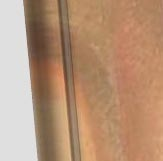

ÖNSÖZ
Sevgili Harry Potter Hayranları,
Hem biz uzun bir yolculuğu sonlandırırken hem de sizler bir ömür boyu devam eden büyünün son parçasını tadmak üzereyken, Harry Potter kitaplarının ve serisinin son kitabı Harry Potter ve Ölümcül Kutsallar’ı sunmaktan gurur duyuyorum.
Az sonra okumaya başlayacağınız çeviri, onlarca insanın büyük özverileri sonucunda ortaya çıktı. Kimimiz ailesini, kimimiz arkadaşlarını, kimimiz işini ihmal etti, gece gündüz çalışıp kitabı çevirdi. Ancak şimdi, tatlı sona ulaşmanın keyfini çıkarıyoruz.
Umarız bu çeviriyi okuduktan sonra, uzun bir hikayeyi siz de sona erdirmenin keyfini çıkarırsınız.
Ancak son bir konuya değinmek istiyorum. Her ne kadar bizler, kitaba geç kavuşan siz Türk hayranları için çabalayıp bu çeviriyi hazırlasak da, yine de en iyisi orijinal kitabı satın alıp öyle okumaktır.
Bu sayede bizim gibi gecelerini gündüzlerine katan çevirmenler, bu emeklerinin karşılığını alacaklardır.
Ayrıca buradan kitabın çevrilmesi ve arkaplan çalışmaları sırasında yardımları dokunan çeşitli kişilere teşekkürlerimi sunmak istiyorum.
Başta, bana her konuda destek çıkıp yardımlarını esirgemeyen, bölümlerin kontroleri aşamasında bana büyük yardımları dokunan Lethe’e; arta kalan bölümlerde ekstra çaba harcayan Kirke ve beraberinde Constantine, Corinthian.nl, McGayver ve Okyanus’a, ayrıca özgüven eksiliği ve kişilik gelişimini tamamlayamama gibi sorunlardan muzdarip kişilerin grubu yarıda bırakmasıyla artan ek bölümleri çevirmek için ayrı bir çaba harcayan ve bir kez olsun bir dediğimi ikiletmeyen diğer üyelerime teşekkür ederim.
Bunun yanı sıra web sitesinin tasarımı sırasında bana desteklerini esirgemeyen M00dy’e, geçici olarak da olsa siteye hosting yardımı sunan Hezarfen’e, sitenin sunucularında bulunması ricamı kırmayan arkadaşım d4rkz’a ayrıca teşekkürlerimi iletirim.
Çeviriler sırasında, isteğimi geri çevirmeyip radyo yayınını sürdüren Zuzu’ya da teşekkür ederim.
Kitabın Türkçeleştirilmesi aşamasında, babasını kaybeden çok sevgili dostum Fovundur’a Alah’tan sabır, babasına ise rahmet diliyorum.
Bu sırada ihmal ettiğimiz ailelerimizden, arkadaşlarımızdan özür dileriz. =) Son olarak bu üstün çaba sonucu oluşturduğumuz bu çeviriyi okuyacak siz saygıdeğer Harry Potter hayranlarına hem sabırlarından hem de desteklerinden ötürü şükranlarımı sunarım. Zannediyorum, dünya çapında en çok geri plana itilen Harry Potter topluluğu olan biz Türk fanlarına, böyle bir çeviri yakışırdı.
Hayatlarımızın en ücra köşelerine kadar ulaşıp, bizi yer yer uykusuz bırakan, yer yer güldüren yer yer ağlatan bu sihirli dünyayı yaratan JK. Rowling’e de tüm hayranlar adına teşekkür ederim. Zannediyorum ki kimse bu kitaplarda küçük bir parça da olsa kendinden bir şeyler bulduğunu inkâr edemez.
Ayrıca bizi ikinci kitaptan bu yana güzel çevirileriyle yalnız bırakmayan, bu büyülü dünyayı olduğu gibi ruhumuza işleyen, çok sevgili kitap çevirmenleri Sevin Okyay ve oğlu Kutlukhan Kutlu’ya minnettar olduğumuzu belirtirim.
NOT: Ayrıca sizlere, Türkiye’de Harry Potter adına büyük işler başaran ve hoşuma giden bazı siteleri önermek istiyorum.
www.veritaserum.com (Yakında Türkçe…)
http://shadowshooter.wordpress.com (Kişisel Blog) Ayrıca çeviriler hakkındaki düşüncelerinizi yoldaslikhp@gmail.com adresine yol ayarak paylaşabilirsiniz. Sizlerden hoş
tepkiler almak, akıttığımız terin anlam bulması demektir.
Saygılarımla;
Yoldaşlık HP başkanı,
Shadow_Shooter
BÖLÜMLER VE ÇEVİREN YOLDAŞLIK HP ÜYELERİ
1. Karanlık Lord Yükselişte (Kirke)
2. Anısına (Kirke)
3. Dursleylerin Gidişi (Lethe)
4. Yedi Potter (McGayver)
5. Yiten Savaşçı (Melankoli)
6. Pijamalı Gulyabani (Lethe)
7. Albus Dumbledore’un Mirası (Corinthian.NL)
8. Düğün (Shadow_Shooter)
9. Saklanacak Bir Yer (McGayver)
10. Kreacher’ın Öyküsü (Kirke)
11. Rüşvet (Lethe)
12. Sihir Güçtür (Corinthian.NL, Scarlet, McGayver)
13. Muggle Doğumluları Kayıt Komisyonu (Quty)
14. Hırsız (OwL Post)
15. Cincüce’nin İntikamı (OwL Post)
16. Godric’s Hollow (McGayver)
17. Bathilda’nın Sırrı (Shadow_Shooter)
18. Albus Dumbledore’un Hayatı ve Yalanları (Kirke)
19. Gümüş Ceylan (Kirke, McGayver)
20. Xenophilius Lovegood (Scarlet)
21. Üç Kardeşin Hikayesi (Scarlet)
22. Ölümcül Kutsallar (Okyanus)
23. Malfoy Malikanesi (Corinthian.NL, Melankoli, Nundu)
24. Asa Yapımcısı (Shadow_Shooter)
25. Kabuk Kulübe (Lethe, Shadow_Shooter)
26. Gringotts (Corinthian.NL)
27. Son Saklanma Yeri (Shadow_Shooter, Fovundur)
28. Kayıp Ayna (Okyanus)
29. Kayıp Taç (McGayver, OwL Post)
30. Severus Snape’in Kovuluşu (Corinthian.NL)
31. Hogwarts Savaşı (Kirke, Melankoli, Corinthian.NL)
32. Yüce Asa (Corinthian.NL, Kirke, Melankoli, McGayver)
33. Prens’in Öyküsü (Okanus)
34. Tekrar Orman (Karsus)
35. King’s Cross (Melankoli)
36. Planda Terslik (Shadow_Shooter)
Kapanış: McGayver
BİRİNCİ BÖLÜM
KARANLIK LORD YÜKSELİŞTE
Ġki adam ay ıĢığının aydınlattığı dar caddede birbirlerinden birkaç metre ötede yoktan var oldular.
Asaları birbirlerinin göğsüne doğrultulmuĢ halde bir saniyeliğine hareketsiz durdular; sonra, birbirlerini tanıyarak asalarını pelerinlerinin altına soktular ve aynı yöne doğru hızlı adımlarla yürümeye baĢladılar.
―Haberler?‖ diye sordu uzun olan.
―Sadece en iyileri,‖ diye cevapladı Severus Snape.
Caddenin solunda kısa boylu vahĢi böğürtlenler dikiliydi, sağındaysa uzun boylu düzgün budanmıĢ
çalı çitler. Yürürken, adamların uzun pelerinleri bileklerinin etrafında dalgalandı.
―Belki geç kalırım diye düĢündüm,‖ dedi Yaxley, yuvarlak hatları yukarıdan sarkan ağaçlar ay ıĢığını kestikçe gözden kaybolup tekrar görünürken. ―Beklediğimden daha zordu. Ama umarım memnun kalır.
Kabul töreninin iyi olacağından eminmiĢsin gibi konuĢuyorsun?‖
Snape baĢıyla onayladı, ama ayrıntıya girmedi. Evi caddeye bağlayan geniĢ bir yola doğru sağa döndüler. Uzun boylu çalı çitler onlarla beraber kıvrıldı; adamların önünü kapayan heybetli dövme demir kapıların ötesindeki uzaklığa doğru devam ediyorlardı. Ġkisi de adımlarını kesmediler: Sessizlik içinde ikisi de bir tür selam verir gibi sol kollarını kaldırdı ve koyu metal dumanmıĢ gibi direk içinden geçti.
Porsukağacı çalı çiti adamların ayak seslerinin sesini bastırdı. Sağ taraflarında bir yerlerde bir hıĢırdama vardı: Yaxley yine asasını çıkardı ve refakatçisinin kafasının üstünden uzattı, ama gürültünün kaynağının çalı çitin tepesinde asaletle kasılarak yürüyen bembeyaz bir tavus kuĢundan baĢka bir Ģey olmadığı ortaya çıktı.
―Kendine iyi baktı hep Ģu Lucius. Tavus kuĢları…‖ Yaxley gülerek asasını pelerinin altına geri soktu.
Düz yolun sonunda içinden ıĢık parıldayan alt pencereleri baklava Ģeklinde camlarla kaplı olan güzel bir konak karanlığın içinde yükseldi. Çalı çitin ötesindeki karanlık bahçede bir yerlerde bir fıskiye akıyordu. Snape ve Yaxley ön kapıya doğru hızla yürürken çakıl taĢları ayaklarının altında çatırdadı.
Kapı görünürde kimsenin açmamasına rağmen, onlar yaklaĢırken içeri doğru açıldı.
Koridor geniĢti, loĢtu ve taĢ yerin çoğunu kaplayan muhteĢem bir halıyla Ģatafatlı bir dekorasyona sahipti. Duvardaki soluk yüzlü portrelerin gözleri geçerlerken Snape ve Yaxley‘i izledi. Ġki adam bir sonraki odaya açılan ağır bir tahtadan kapının önünde durdu, çok kısa bir an tereddüt ettiler, sonra Snape bronz tokmağı çevirdi.
ÇalıĢma odası uzun görkemli bir masada oturan sessiz insanlarla doluydu. Odanın her zamanki mobilyası dikkatsizce duvar diplerine itilmiĢti. IĢıklandırma yaldızlı bir aynanın altındaki güzel bir mermer Ģöminenin altında gürüldeyen ateĢten geliyordu. Snape ve Yaxley bir anlığına eĢikte beklediler. Gözleri az ıĢığa alıĢınca sahnenin en tuhaf bölümüne dikkatlerini yönelttiler: masanın üzerinde baĢ aĢağı asılı duran ve görünmez bir iple asılmıĢçasına yavaĢça dönen, görüldüğü kadarıyla kendinde olmayan bir insan figürü. Aynada ve altındaki masanın cilalı yüzeyinde yansıması görünüyordu. Neredeyse tam altında oturan soluk tenli genç adam hariç bu görüntünün altında oturan insanlardan hiçbiri ona bakmıyordu. Kendini birkaç dakikada bir yukarı bakmaktan alıkoyamıyor gibi görünüyordu.
―Yaxley, Snape,‖ dedi yüksek, anlaĢılır bir ses masanın baĢından. ―Az kalsın geç kalıyordunuz.‖
KonuĢan Ģöminenin tam önünde oturuyordu, bu yüzden yeni gelenlerin siluetinden daha fazlasını çıkarabilmeleri zordu. Fakat yaklaĢtıklarında, yüzü karanlıkta parladı; saçsız, yılansı yüzdeki burun delikleri birer yarıktı ve parlayan kırmızı gözlerin gözbebekleri dikeydi. O kadar soluktu ki incimsi bir parıltı yayıyor gibi görünüyordu.
―Severus, buraya,‖ dedi Voldemort, kendi sağındaki sandalyeyi iĢaret ederek. ―Yaxley – Dolohov‘un yanına.‖
Ġki adam kendilerine tahsis edilen yerlere oturdu. Masanın etrafındaki gözlerin çoğu Snape‘i izledi ve Voldemort da ilk onunla konuĢtu.
―Evet?‖
―Lordum, Zümrüdüanka YoldaĢlığı Harry Potter‘ı Ģu anki güvenli yerinden sonraki Cumartesi akĢam karanlığında uzaklaĢtırmayı planlıyor.‖
Masanın etrafında ilgi hissedilir ölçüde çoğaldı. Bazılarının duruĢları sertleĢti, diğerleri yerlerinde kımıldadı. Hepsi Snape ve Voldemort‘a bakıyordu.
―Cumartesi… akĢam karanlığında,‖ diye tekrar etti Voldemort. Kırmızı gözleri Snape‘in siyah gözleri üzerine o kadar yoğun bir Ģekilde odaklandı ki izleyenlerden bazıları besbelli kendilerinin de bakıĢın vahĢetinden kavrulacağından korkarak bakıĢlarını kaçırdı. Fakat Snape Voldemort‘un yüzüne sakince baktı ve birkaç saniye sonra Voldemort‘un dudaksız ağzı gülümsemeye benzer bir Ģey yapmak için kıvrıldı.
―Ġyi. Çok iyi. Ve bu bilgi—‖
―—konuĢtuğumuz kaynaktan geliyor,‖ dedi Snape.
―Lordum.‖
Yaxley uzun masanın üzerinden Voldemort ve Snape‘e bakmak için öne doğru eğilmiĢti. Bütün yüzler ona çevrildi.
―Lordum, ben farklı Ģekilde duydum.‖
Yaxley bekledi, ama Voldemort konuĢmadı, bu yüzden devam etti. ―Seherbaz Dawlish, Potter‘ın otuzuna kadar, çocuğun on yedi yaĢına basmadan önceki geceye kadar yerinin değiĢtirilmeyeceğini sızdırdı.‖
Snape gülümsüyordu.
―Kaynağım yanlıĢ bir iz bırakmak için planlar olduğunu söyledi; bu o olmalı. ġüphesiz Dawlish‘e bir Kafa KarıĢtırma Büyüsü yapıldı. Bu ilk olmazdı; çevresindekilerden çabuk etkilenmesiyle tanınan biri.‖
―Sizi temin ederim, Lordum, Dawlish emin görünüyordu,‖ dedi Yaxley.
―Eğer kafası karıĢtırıldıysa, doğal olarak emindir,‖ dedi Snape. ― Sizi temin ederim Yaxley, Seherbaz Ofisi Harry Potter‘ın korunmasında daha fazla bir rol oynamayacak. YoldaĢlık bizim Bakanlık‘a sızdığımıza inanıyor.‖
―YoldaĢlık en azından bir Ģeyi doğru yakalamıĢ öyleyse, ha?‖ dedi Yaxley‘nin yakınında oturan tıknaz bir adam; masanın çeĢitli yerlerinde yankılanan hırıltılı bir sesle kıkırdadı.
Voldemort gülmedi. BakıĢı baĢlarının üzerinde yavaĢça dönen vücuda kaydı; düĢüncelere dalmıĢ gibi görünüyordu.
―Lordum,‖ diye devam etti Yaxley. ―Dawlish çocuğun transferinde bütün Seherbaz grubunun kullanılacağına—‖
Voldemot büyük beyaz elini kaldırdı ve Yaxley anında sustu. Voldemort Snape‘e dönerken sinirle izledi.
―Çocuğu saklayacakları bir sonraki yer neresi?‖
―YoldaĢlık üyelerinden birinin evinde,‖ dedi Snape. ―Kaynağa göre bu yer YoldaĢlık ve Bakanlık‘ın birlikte temin edebileceği her korumaya sahip. Oraya vardıktan sonra onu alabilme Ģansının çok az olduğunu düĢünüyorum, Lordum, tabi Bakanlık bir sonraki Cumartesi‘nden önce düĢmediği sürece; çünkü bu bize geri kalanını kırabilmek için yeterince büyüyü keĢfedip kaldırma fırsatı verir.‖
―Ee, Yaxley?‖ diye masanın ucuna seslendi Voldemort. AteĢin ıĢığı kırmızı gözlerinde tuhaf bir Ģekilde parıldıyordu. ―Bakanlık öbür Cumartesi‘ne kadar düĢmüĢ olacak mı?‖
Bir kez daha, bütün kafalar çevrildi. Yaxley vücudunu dikleĢtirdi.
―Lordum, o konuda iyi haberlerim var. Ben zorluklarla ve büyük bir uğraĢ sonucunda Pius Thicknesse üzerine Ġmperius Laneti yapmayı baĢardım.‖
Yaxley‘nin çevresinde oturan birçok kiĢi etkilenmiĢ göründü; komĢusu Dolohov, uzun kötücül bir yüze sahip bir adam, sırtına bir Ģaplak attı.
―Bu bir baĢlangıç,‖ dedi Voldemort. ―Ama Thicknesse sadece bir adam. Ben harekete geçmeden önce Scrimgeour‘ın, adamlarımız tarafından etrafı sarılmıĢ olmalı. BaĢkan‘ın hayatına kasıt olarak yapılmıĢ
tek bir yanlıĢ hamle beni çok geriye sürükler.‖
―Evet—Lordum, bu doğru—ama biliyorsunuz, Sihirli Kanun Yürütme Ofisi‘nin baĢı olarak Thicknesse‘ın sadece BaĢkan‘ın kendisiyle değil, bütün diğer Bakanlık departmanlarının baĢlarıyla da düzenli irtibatı vardı. Kontrolümüzün altında böyle bir üst düzey memurun olması sayesinde Ģimdi sanıyorum ki diğerlerini de ele geçirmemiz kolaylaĢacak ve sonra hepsi Scrimgeour‘u çökertmek için beraber çalıĢabilir.‖
―Dostumuz Thicknesse diğerlerini de döndürmeden önce keĢfedilmezse tabi,‖ dedi Voldemort. ―Her halükarda, Bakanlık‘ın öbür Cumartesi‘den önce benim olması hala olanaksız gibi görünüyor. Eğer çocuğa hedefinde dokunamazsak, bu, yolculuk ettiği süre içinde olmalı.‖
―Orada avantaj bizde, Lordum,‖ dedi Yaxley; biraz olsun onay görmeye kararlı gibi görünüyordu. ―ġu anda Sihirli UlaĢım Departmanı‘nın içine birkaç insan yerleĢtirmiĢ durumdayız. Eğer Potter cisimlenirse veya Uçuç ġebekesi‘ni kullanırsa anında haberimiz olacak.‖
―Ġkisini de yapmayacak,‖ dedi Snape. ―YoldaĢlık Bakanlık tarafından düzenlenen veya kontrol edilen her tür ulaĢım yolundan sakınıyor; o yerle ilgili hiçbir Ģeye güvenmiyorlar.‖
―Daha da iyi,‖ dedi Voldemort. ―Açıkta hareket etmek zorunda kalacak. Ele geçirmesi daha kolay.‖
Yine, Voldemort yukarıda yavaĢça dönen vücuda baktı lafına devam ederken, ―Çocukla ben kendim ilgileneceğim. Harry Potter‘la ilgili pek çok hata yapıldı. Bazıları benim kendi hatalarım. O Potter kendi zaferlerinden çok benim hatalarım sayesinde yaĢıyor.‖
Masanın çevresindekiler Voldemort‘u endiĢeyle izledi. Her biri yüz ifadelerinden anlaĢıldığı kadarıyla Harry Potter‘ın devam eden var oluĢundan ötürü suçlanma korkusu taĢıyordu. Ancak Voldemort onlardan biriyle değil de daha çok kendisiyle konuĢuyormuĢ gibiydi. Hala üzerindeki kendinden geçmiĢ
vücuda doğru konuĢuyordu.
―Dikkatsiz davrandım ve Ģans tarafından engellendim. En iyi hazırlanmıĢ planları bile bozdu. Ama Ģimdi aklım baĢıma geldi. Daha önce anlamadığım Ģeyleri anlıyorum. Harry Potter‘ı öldürecek olan ben olmalıyım ve olacağım da.‖
Bu sözlerle birlikte, görünüĢe bakılırsa ona cevap olarak, ani bir feryat sesi geldi; korkunç, acı bir haykırıĢ. Masadakilerin birçoğu hayretle aĢağı baktı, çünkü ses ayaklarının altından geliyormuĢ gibiydi.
―Kılkuyruk,‖ dedi Voldemort sessiz, düĢünceli tonu hiçbir değiĢime uğramadan ve gözlerini yukarıdaki dönen vücuttan ayırmayarak,‖ esirimizi sessiz tutma konusunda senle konuĢmamıĢ mıydım?‖
―Evet, L-lordum,‖ dedi masanın ortalarında oturan ufak bir adam nefes nefese. Sandalyesinde o kadar alçakta oturuyordu ilk bakıĢta sandalye boĢ gibi görünüyordu. O an yerinden fırladı ve ardında gümüĢ
bir merak uyandırıcı parıltıdan baĢka bir Ģey bırakmadan aceleyle odadan dıĢarı çıktı.
―Söylediğim gibi,‖ diye devam etti Voldemort, müritlerinin gergin yüzlerine tekrar bakarak, ―Ģimdi daha iyi anlıyorum, Potter‘ı öldürmeye gitmeden önce birinizden bir asa ödünç almam gerektiğini mesela.‖
Etrafındaki yüzler Ģok ifadesine büründü; sanki kollarından birini ödünç almak istediğini duyurmuĢtu.
―Gönüllü yok mu?‖ dedi Voldemort. ―Bakalım… Lucius, senin bundan sonra bir asan olması için bir sebep göremiyorum.‖
Lucius Malfoy baĢını kaldırdı. Cildi ateĢin ıĢığında sarımsı ve cilalı görünümdeydi gözleri de gölgeli ve çökmüĢtü. KonuĢtuğunda, sesi boğuktu.
―Lordum?‖
―Asan, Lucius. Asanı istiyorum.‖
―Ben…‖
Malfoy eĢine yan yan baktı. Direk önüne bakıyordu, onun kadar solgundu. Uzun sarı saçları sırtından aĢağı iniyordu, ama masanın alında ince parmakları kısa süreliğine bileğini kavradı. Onun dokunuĢuyla Malfoy elini cüppesinin içine koydu, bir asa çıkardı ve Voldemort‘a uzattı. O da onu kırmızı gözlerinin önünde tuttu ve yakından inceledi.
―Ne bu?‖
―Karaağaç, Lordum,‖ diye fısıldadı Malfoy.
―Ve üstünde?‖
―Ejderha — ejderha yürek lifi.‖
―Ġyi,‖ dedi Voldemort. Kendi asasını çıkardı ve uzunluklarını karĢılaĢtırdı. Lucius Malfoy istem dıĢı bir hareket yaptı; saniyenin onda biri kadar bir süre kendi asasının yerine Voldemort‘un asasını alacağını beklemiĢ gibiydi. Voldemort hareketi kaçırmamıĢtı; gözleri kötücülce büyüdü.
―Sana asamı mı vereyim, Lucius? Benim asamı mı?‖
Topluluğun bazısı kıs kıs güldü.
―Sana özgürlüğünü verdim, Lucius, bu senin için yeterli değil mi? Ama fark ettim ki sen ve ailen bundan çok da memnun görünmüyorsunuz… Evindeki varlığımın nesi seni bu kadar mutsuz ediyor Lucius?‖
―Hiçbir Ģeyi – hiçbir Ģeyi, Lordum!‖
―Hep yalanlar, Lucius…‖
YumuĢak ses acımasız ağız hareket etmeyi kestikten sonra bile tıslama devam ediyor gibiydi. Tıslama büyürken büyücülerden bir veya ikisi titremesine ancak hâkim olabildi; ağır bir Ģeyin masanın altındaki yerde sürünmesi duyulabiliyordu.
Koca yılan yavaĢça Voldemort‘un sandalyesinden yukarı tırmanırken göründü. Sonsuza kadar devam edecekmiĢ gibi bedenini kaldırdı ve Voldemort‘un omuzları üzerinde durdu: Boynu bir adamın bacağı kadar kalındı, gözbebeği yerine dikey çizikleri olan gözlerini ise kırpmıyordu. Voldemort Lucius‘a bakmaya devam ederken uzun ince parmaklarıyla yaratığı boĢ boĢ okĢadı.
―Neden Malfoylar hallerinden bu kadar mutsuz görünüyorlar? DönüĢüm, benim güce eriĢmem, onların pek çok yıllar boyu yürekten istediklerini iddia ettikleri Ģey değil miydi?‖
―Elbette, Lordum,‖ dedi Lucius Malfoy. Eli üst dudağındaki teri silerken titredi. ―Gerçekten istedik –istiyoruz.‖
Malfoy‘un solunda, eĢi tuhaf, sert bir edayla baĢıyla onayladı, gözlerini Voldemort ve yılandan uzaklaĢtırarak. Sağında, oğlu, baĢlarının üstündeki hareketsiz bedene bakan Draco, hızla Voldemort‘a baktı ve onunla göz teması kurduğun için korkuyla tekrar gözlerini kaçırdı.
―Lordum,‖ dedi masanın ortalarındaki karanlık bir kadın. Sesi duyguyla doluydu, ―sizi burada, aile evimizde konuk etmek bir Ģeref. Daha üstün bir memnuniyet olamaz.‖
Kaskatı ve hareketsiz oturan kız kardeĢinin yanında oturuyordu; siyah saçlarıyla ve ĢiĢ gözkapaklı gözleriyle ve tavırlarıyla ona hiç benzemiyordu. Bellatrix Voldemort‘a doğru eğildi, çünkü sadece sözler onun yakınlığa hasretini gösteremezdi.
―Daha üstün bir memnuniyet olmaz,‖ diye tekrarladı Voldemort. Bellatrix‘in söylediklerini düĢünürken baĢını bir tarafa yatırdı. ―Bunun senden gelmesinin önemi çok büyük, Bellatrix.‖
Yüzüne renk hücum etti; gözleri mutluluk gözyaĢlarıyla doldu.
―Lordum doğrudan baĢka bir Ģey konuĢmadığımı biliyor!‖
―Daha üstün bir memnuniyet olamaz… Duyduğuma göre ailenizde gerçekleĢen mutlu olayla kıyaslandığında bile mi?‖
Ona ağzı aralık bakakaldı; besbelli kafası karıĢmıĢtı.
―Ne demek istediğinizi anlamıyorum, Lordum.‖
―Yeğeninden bahsediyorum, Bellatrix. Ve senin de, Lucius ve Narcissa. Kurtadam Remus Lupin‘le evlendi. Çok gurur duyuyor olmalısınız.‖
Masanın etrafında yüksek kahkaha patlaması oldu. Çoğu birbirine neĢeli bakıĢlar atmak için öne eğildi, birkaçı da masayı yumruklarıyla dövdü. Büyük yılan bu karıĢıklıktan hoĢlanmayarak ağzını geniĢçe açtı ve sinirle tısladı, ama Ölüm Yiyenler Bellatrix ve Malfoylar‘ın rezil olmasına o kadar sevinmiĢlerdi ki onu duymadılar. Bellatrix‘in biraz önce mutlulukla kızaran yüzü, çirkin lekeli bir kırmızıya dönmüĢtü.
―O bizim yeğenimiz filan değil, Lordum,‖ diye feryat etti coĢkun kahkahalar arasından. ―Biz – Narcissa ve ben – o Bulanıkla evlendiğinden beri kız kardeĢimizi görmedik bile. Veletinin de evlendiği herhangi bir yaratığın da ikimizle de ilgisi yoktur.‖
―Sen ne diyorsun, Draco?‖ diye sordu Voldemort, ve sesi alçak olmasına rağmen ıslıkların ve alayların arasından açık seçik duyuldu. ―Yavrulara bebek bakıcılığı yapacak mısın?‖
Rezalet daha da büyüdü; Draco Malfoy kendi kucağına öylece bakan babasına dehĢetle baktı, sonra da annesinin gözünü yakaladı. BaĢını neredeyse belli belirsiz iki yana salladı, sonra karĢı duvara donuk donuk bakmaya devam etti.
―Yeter,‖ dedi Voldemort, kızgın yılanı okĢayarak. ―Yeter.‖
Ve kahkaha anında durdu.
―Zamanla en eski aile ağaçlarımızın çoğu mikrop kapıyor,‖ dedi Bellatrix ona nefessiz ve yalvaran bakıĢlarla bakarken. Onu sağlıklı tutmak için sizin de onu budamanız gerekiyor, değil mi? Diğerlerinin sağlığını tehlikeye atan parçaları kesip atmanız.‖
―Evet, Lordum,‖ diye fısıldadı Bellatrix gözleri yine Ģükran gözyaĢlarıyla yüzerek. ―Ġlk fırsatta!‖
―Elinde olacak,‖ dedi Voldemort. ―Ve senin ailende ve dünyada bize bulaĢan mikropları kesip atacağız, sadece gerçek kana sahip olanlar kalana kadar…‖
Voldemort Lucius Malfoy‘un asasını kaldırdı, masanın üstünde sarkan yavaĢça dönen figüre doğru uzattı ve ufak bir hareketle salladı. Figür bir homurdanmayla hayata döndü ve görünmez iplere karĢı mücadele etti.
―Misafirimizi tanıdın mı, Severus?‖ diye sordu Voldemort.
Snape gözlerini baĢ üstü duran yüze doğru çevirdi. Bütün Ölüm Yiyenler tutsağa bakıyordu Ģimdi, sanki meraklarını gösterme izni verilmiĢ gibi. Kadın ateĢe doğru dönerken çatlak ve korkmuĢ bir sesle dedi ki, ―Severus! Yardım et bana!‖
―Ah, evet,‖ dedi Snape esir yavaĢça tekrar uzağa doğru dönerken.
―Ve sen, Draco?‖ diye sordu Voldemort. ―Bilmeyenler için söylüyorum, bu geceki konuğumuz yakın bir zamana kadar Hogwarts Cadılık ve Büyücülük Okulu‘nda öğretmenlik yapan Chariry Burbage.‖
Masanın etrafında oturanlar anladıklarını belli eden sesler çıkardı. Sivri diĢli, geniĢ, kambur bir kadın kıkırdadı.
―Evet… Profesör Burbage cadıların ve büyücülerin çocuklarına Muggle‘lar hakkında ders verdi…
Bizden ne kadar farklı oldukları hakkında…‖
Ölüm Yiyenlerden biri yere tükürdü. Chariry Burbage Snape‘in önüne doğru döndü. Gözlerinden saçlarına doğru yaĢlar akıyordu. Ondan uzağa doğru dönerken Snape de ona hareketsizce baktı.
― Avada Kedavra.‖
YeĢil ıĢığın parıldaması odanın her köĢesini parlattı. Chariry yankılanan bir sesle sallanan ve gıcırdayan masanın üzerine düĢtü. Bazı Ölüm Yiyenler sandalyelerinde zıpladılar. Draco sandalyesinden yere düĢtü.
―AkĢam yemeği, Nagini,‖ dedi Voldemort yumuĢak bir sesle ve koca yılan sallandı ve omzundan cilalı tahtanın üzerine doğru süründü.
İKİNCİ BÖLÜM
ANISINA
Harry‘nin eli kanıyordu. Sağ elini sol eliyle tutarak ve fısıltıyla küfrederek odasının kapısını omzuyla açtı. Kırılan porselen sesi duyuldu: Odasının kapısının dıĢında yerin üstünde duran bir fincan soğuk çayın üzerine basmıĢtı.
―Bu da – ?‖
Etrafına baktı; dört numara, Privet Drive‘ın koridoru boĢtu. Muhtemelen çay Dudley‘nin zekice bir bubi tuzağı anlayıĢıydı. Kanayan elini yüksekte tutarak Harry öbür eliyle parçalarını toplayıp aldı ve odasının kapısından görünen dolup taĢmıĢ çöp kutusuna attı. Sonra parmağını musluğun altına tutmak için kuvvetli adımlarla banyoya doğru yürüdü.
Hala sihir yapamayacağı dört günün olması aptalca, mantıksız, inanılmaz derecede sinir bozucuydu…
Ama kendisine itiraf etmeliydi ki, yine de parmağındaki bu derin kesik onu bozguna uğratırdı. Yaraları iyileĢtirmeyi hiçbir zaman öğrenmemiĢti ve Ģimdi farkına varıyordu ki – özellikle yakın zaman sonrası için yaptığı planlarından önce – sihir eğitiminde bu ciddi bir eksiklikti. Nasıl yapılacağını Hermione‘ye sormayı aklının bir köĢesine yazarken, büyük bir tomar tuvalet kâğıdıyla silebildiği kadar çayı silerek odasına döndü ve kapıyı arkasından çarparak kapattı.
Harry sabahı tamamen okul sandığını altı yıl önce topladığından beri ilk defa tamamen boĢaltarak geçirmiĢti. Araya giren okul yıllarının baĢında, sadece içeriğinin en üstteki üççeyreğini almıĢtı ve yenilemiĢti. Bu da dibine genel bir yıkıntı tabakası bırakmıĢtı – eski tüy kalemler, kurutulmuĢ böcek gözleri, artık ona olmayan çiftsiz çoraplar. Dakikalar önce, Harry elini bu karıĢıklığın içine daldırmıĢtı, sağ elinin yüzük parmağında bıçak gibi bir acı tecrübe etmiĢti ve geri çektiğinde bir sürü kan görmüĢtü.
ġimdi daha dikkatlice iĢine devam etti. Sandığın yanında diz çökerek dibini yokladı ve sönükçe CEDRIC DIGGORY‘Ġ DESTEKLEYĠN ve DANDĠK POTER arasında parıldayan eski bir rozeti, çatlamıĢ
ve eskimiĢ bir Sinsioskopu, ve içinde R.A.B. tarafından imzalanmıĢ olan bir notun saklandığı altın kolyeyi çıkardıktan sonra, sonunda zarara neden olan keskin köĢeyi keĢfetti. Onu anında tanıdı.
ÖlmüĢ vaftiz babası, Sirius‘un ona verdiği büyülü aynanın bir kaç santimlik parçasıydı. Harry onu bir köĢeye koydu ve geri kalanı için sandığın içini dikkatlice yokladı, ama vaftiz babasının son hediyesinden geriye enkazın en derin katmanına parlayan kum taneleri gibi yapıĢan toz haline gelmiĢ
camdan baĢka bir Ģey kalmamıĢtı.
Harry doğruldu kendisini kestiği keskin parçayı inceledi ve ona geri yansıyan kendi parlak yeĢil gözünden baĢka bir Ģey görmedi. Parçayı yatağın üstünde okunmamıĢ duran o sabahki Gelecek Postası‘nın üzerine koydu ve acı hatıraların ve kırık aynanın keĢfinin neden olduğu piĢmanlık ve özlem darbelerinin ani akıĢını, sandığındaki geri kalan çerçöpe saldırarak durdurmaya teĢebbüs etti.
Sandığı tamamen boĢaltmak, iĢe yaramaz Ģeyleri atmak ve kalanları bundan sonra ihtiyacı olup olmayacağına göre iki yığına ayırmak bir saatini daha aldı. Okul ve Quidditch cüppeleri, kazanı, parĢömeni, tüy kalemleri ve okul kitaplarının çoğu arkada bırakılmak üzere bir köĢeye yığılmıĢtı.
Teyzesinin ve eniĢtesinin onlarla ne yapacağını merak etti; gecenin köründe onları yakacaklardı muhtemelen, korkunç bir suçun kanıtlarıymıĢçasına. Muggle giysileri, Görünmezlik Pelerini, iksir-yapım seti, bazı kitaplar, Hagrid‘in ona verdiği fotoğraf albümü, bir mektup yığını ve asası eski bir sırt çantasına yeniden toplanmıĢtı. Bir ön cepte Çapulcu Haritası ve içinde R.A.B. imzalı notla beraber madalyon vardı. Madalyona bu onur yeri değerli olduğu için verilmemiĢti – normalde değersizdi – onu elde etmenin bedeli için verilmiĢti.
Geriye oldukça beyaz baykuĢu Hedwig‘in yanında çalıĢma masasının üstünde duran büyük bir gazete yığını kalmıĢtı: Harry‘nin bu yaz Privet Drive‘da geçirdiği her gün için bir tane.
Yerden ayağa kalktı, esnedi ve masasına doğru ilerledi. Gazeteleri karıĢtırmaya ve teker teker çöp yığınına atmaya baĢlarken Hedwig hiç hareket etmedi. BaykuĢ uyuyordu ya da uyuma taklidi yapıyordu; o anda kafesinden sınırlı uzunlukta çıkabildiği için Harry‘e kızgındı.
Gazete yığının sonuna yaklaĢtığında Harry yavaĢladı ve yaz için Privet Drive‘a vardığından kısa bir süre sonra geldiğini bildiği özel bir basımı aradı; ön sayfada Hogwarts‘ta Muggle AraĢtırmaları öğretmeni olan Charity Burbage‘ın istifası üzerine ufak bir not olduğunu hatırlıyordu. Sonunda buldu.
Onuncu sayfaya çevirerek çalıĢma masasının sandalyesine çöktü ve aradığı makaleyi tekrar okudu.
ALBUS DUMBLEDORE HATIRLANIYOR
Elphias Doge
Albus Dumbledore ile on bir yaĢında tanıĢtım, Hogwarts‘daki ilk günümüzde. KarĢılıklı çekimimiz Ģüphesiz ikimizin de yabancı gibi hissettiği gerçeğinden kaynaklanıyordu.
Okula gelmeden kısa bir süre önce ejderha çiçeği kapmıĢtım ve artık bulaĢıcı olmamama rağmen benekli yüzüm ve yeĢilimsi rengim çoğunu bana yaklaĢmaya davet etmedi. Albus ise Hogwarts‘a istenmeyen kötü Ģöhret yükü altında gelmiĢti. Neredeyse bir yıl önce babası Percival üç genç Muggle üstünde vahĢi ve tanınmıĢ bir saldırı yüzünden suçlanmıĢtı.
Albus hiçbir zaman (Azkaban‘da ölecek olan) babasının bu suçu iĢlediğini inkâr etmeye teĢebbüs etmemiĢti; tam tersi, ona soracak cesareti topladığımda, bana babasının suçlu olduğunu bildiğini temin etti. Bunun ötesinde, birçoğunun onu zorlamaya teĢebbüs etmesine rağmen, Dumbledore üzücü olay hakkında konuĢmayı reddetti. Bazıları, gerçekten de, babasının hareketini övme eğilimindeydi ve Albus‘un da bir MuggledüĢmanı olduğunu varsaydılar. Daha yanlıĢ düĢünemezlerdi. Albus‘u bilen herkesin tasdik edeceği gibi, en ufak bir anti-Muggle eğilimi göstermedi. Aslında, Muggle haklarına kararlı desteği takip eden yılarda ona pek çok düĢman kazandırdı.
Fakat birkaç ay içinde Albus‘un kendi ünü babasınınkini gölgede bırakmaya baĢladı. Ġlk yılının sonunda bir daha asla bir Muggle-düĢmanının oğlu olarak tanınmadı, ama sadece okulda görülmüĢ en parlak öğrenci olarak tanındı. Onun arkadaĢları olma ayrıcalığı olan bizler onun örneğinden faydalandık; her zaman cömertçe sağladığı yardımı ve teĢvikinden söz etmeye gerek yok. Daha sonraları bana ona en büyük memnuniyeti öğretmekten aldığını o zamandan bildiğini itiraf etti.
Okulun verdiği her not ödülünü almakla kalmadı, yakın zaman içinde zamanın en göze çarpan büyülü isimleriyle düzenli mektuplaĢmaya baĢladı; ünlü simyacı Nicholas Flamel, önemli tarihçi Bathilda Bagshot ve sihir teoristi Adalbert Wafling dâhil. Kâğıtlarının bazıları iyi bilinen basımlara ulaĢtı; Biçim DeğiĢtirme Güncesi, Büyülerle BaĢa Çıkma ve Pratik Ġksirci gibi. Dumbledore‘un gelecekteki kariyeri göz kamaĢtırıcı olacak gibiydi ve geriye kalan tek soru ne zaman Sihir Bakanı olacağıydı. Sonraki yıllarda iĢi almak üzere olduğu sıkça öngörülmesine rağmen, hiçbir zaman Bakanlık hırsları olmadı.
Hogwarts‘a baĢladıktan üç yıl sonra, Albus‘un kardeĢi, Aberforth okula geldi. Benzer değil erdi; Aberforth hiçbir zaman kitap kurdu değildi ve Albus gibi olmaksızın, anlaĢmazlıkları mantıklı tartıĢmalarla değil düellolarla hizaya sokmayı tercih ederdi. Fakat bazılarının söylediği gibi kardeĢlerin arkadaĢ olmadığını söylemek yanlıĢ olur. Bu derecede farklı iki çocuk ellerinden geldiği kadar iyi geçindiler. Aberforth için, hakkını yemeyeyim, Albus‘un gölgesi altında yaĢamanın fazla rahatlatıcı bir deneyim olmadığı kabul edilmelidir. Sürekli onun boyunduruğu altında kalması onunla arkadaĢ kalmasına karĢı zorlu bir tehlikeydi ve bir kardeĢ olarak daha memnun edici olamazdı.
Albus ve ben Hogwarts‘tan ayrıldığımızda birlikte o zamanlar geleneksel olan dünya turunu yapacaktık. Ayrı kariyerlerimize atılmadan önce yabancı büyücüleri ziyaret edecektik ve gözlemleyecektik. Fakat trajedi araya girdi. Yolculuğumuzun arifesinde Albus‘un annesi, Kendra, Albus‘u ailenin baĢı, evin tek direği olarak bırakarak öldü.
GidiĢimi Kendra‘nın cenazesine taziyede bulunmaya gidecek kadar erteledim, sonra artık yalnız baĢıma sürdüreceğim yolculuğa çıktım. Bakacak kardeĢleriyle ve onlara kalan çok az altınla Albus‘un bana eĢlik edeceği artık mevzu bahis bile olamazdı.
Bu hayatımızda en az irtibatta olacağımız dönemdi. Albus‘a, belki biraz düĢüncesizce, Yunanistan‘da chimeralardan ucu ucuna kaçmaktan Mısırlı simyacılarla yaptığım deneylere kadar yolculuğumun güzelliklerini anlattığım mektuplar yazdım. Mektupları bana öylesine parlak bir büyücü için hayal kırıcı derecede sıkıcı olduğunu tahmin ettiğim günlük yaĢamının çok azını anlatıyordu. Kendi tecrübelerimin içine öyle dalmıĢtım ki, bir yıllık yolculuğumun sonlarına doğru Dumbledore‘ları bir trajedinin daha vurduğunu dehĢet içinde duydum: kız kardeĢi Ariana‘nın ölümü.
Ariana‘nın sağlığı uzun bir süre kötü durumda olmasına rağmen, darbe annelerinin kaybından hemen sonra geldiği için kardeĢlerinin ikisi üzerinde de derin bir etki bırakmıĢtı.
Albus‘a yakın olan herkes – ve ben kendimi bu Ģanslı insanların arasından sayarım –
Ariana‘nın ölümünün ve Albus‘un bundan kendisini sorumlu tutması (elbette suçsuz olduğu halde), onun üzerinde sonsuza kadar iz bıraktığını kabul eder.
Eve döndüğümde çok daha yaĢlı bir insanın acılarını yaĢamıĢ genç bir adam buldum.
Albus önceden olduğundan daha ağzı sıkıydı ve çok daha az kaygısızdı. Sefaletine ek olarak, Arina‘nın kaybı Albus ve Aberforth arasında yenilenmiĢ bir yakınlığa değil bir farklılaĢmaya neden olmuĢtu. (Zamanla bu ortadan kalkacaktı – daha sonraki yıllarda yakın olmasa da samimi bir iliĢkiyi tekrar kurdular.) Fakat o zamandan sonra ailesi veya Ariana hakkında çok seyrek konuĢtu ve arkadaĢları onlardan bahsetmemeyi öğrendi.
Takip eden yıllardaki zaferlerini baĢka tüy kalemler anlatacaktır. Dumbledore‘un Büyücü bilgisinin durumuna ejderha kanının on iki kullanımının keĢfi dâhil sayısız katkısı gelecek jenerasyonlara da fayda sağlayacak BüyüceĢura‘nın BaĢ Büyücüsü olarak yaptığı pek çok yargılamada gösterdiği bilgeliğinin sağladığı katkı gibi. 1945‘te Dumbledore ve Grindelwald arasında olan düelloya hala hiçbir Büyücü düellosu denk olmamıĢtır derler.
Tanık olanlar iki olağan dıĢı büyücüyü savaĢırken izlerlerken hissettikleri korku ve ĢaĢkınlığı yazdılar. Dumbledore‘un zaferi ve Büyücü Dünyası‘na yaĢattığı neticeleri sihir tarihinde Uluslar arası Gizlilik Yasası‘nın çıkması veya Adı Anılmaması Gereken KiĢi‘nin düĢüĢüne denk bir dönüm noktası olarak nitelendiriliyor.
Albus Dumbledore asla gururlu ya da kendini beğenmiĢ değildi; ne kadar görünürde gereksiz veya periĢan olsa da herkeste değer verecek bir Ģey bulabilirdi ve inanıyorum ki çok erken yaĢadığı kayıpları ona büyük bir insanlık ve sempati kazandırdı. Dostluğunu ne kadar özleyeceğini kelimelerle tarif edemem, ama kaybım Büyücü Dünyası‘nınkiyle kıyaslanamaz. Çünkü bütün Hogwarts müdürleri arasında en ilham kaynağı ve en sevilen olduğu sorgulanamaz. YaĢarken öldü: Her zaman daha iyisi için çalıĢtı ve onunla tanıĢtığım günkü kadar ejderha çiçeği geçiren küçük bir çocuğa bir el uzatmaya son saatine dek gönüllüydü.
Harry okumayı bitirdi, ama biyografiye eĢlik eden resme bakmaya devam etti. Dumbledore tanıdık, sevecen gülümsemesiyle gülüyordu, ama yarım ay Ģeklindeki gözlüklerinin üzerinden bakarken gazete baskısında bile üzüntüsü küçük düĢme hissiyle karıĢmıĢ olan Harry‘de ihanet etme izlenimi bırakıyordu.
Dumbeldore‘u epey iyi tanıdığını düĢünmüĢtü, ama bu biyografiyi okuduğundan beri onu neredeyse hiç tanımadığını anlamak zorunda bırakılmıĢtı. Dumbledore‘un çocukluğunu veya gençliğini bir kere bile hayal etmemiĢti; sanki Harry‘nin onu tanıdığı gibi oluĢmuĢtu, saygı uyandıran ve gümüĢi saçlı ve yaĢlı. Yeniyetme bir Dumbledore düĢüncesi tuhaftı, aptal bir Hermione ya da arkadaĢ canlısı bir Patlar Uçlu Keleker düĢünmek gibiydi.
Dumbledore‘a geçmiĢi hakkında soru sormayı hiç akıl etmemiĢti. Tuhaf, hatta münasebetsiz kaçacağına Ģüphe yoktu, ama her Ģeye rağmen, Dumbedore‘un Grindelwald‘la olan o efsanevi düellonun bir parçası olduğu genel bilgiydi ve Harry Dumbledore‘a nasıl bir his olduğunu ya da diğer meĢhur baĢarıları hakkında soru sormayı düĢünmemiĢti. Hayır, hep Harry‘i, geleceğini, planlarını tartıĢmıĢlardı… ve Ģimdi Harry‘e öyle geliyordu ki geleceğinin çok tehlikeli ve çok muallakta olduğu gerçeğine rağmen, Dumbledore‘a kendisi hakkında daha fazla soru soramadığında geri getirilemeyecek fırsatları kaçırmıĢtı, müdürüne sorduğu en kiĢisel sorunun Dumbledore‘un dürüstçe cevaplamadığı tek soru olduğu konusunda Ģüphelenmesine rağmen:
―Aynaya baktığınızda siz ne görüyorsunuz?‖
―Ben mi? Ben kendimi bir çift kalın yün çorap tutarken görüyorum.‖
Birkaç dakika düĢündükten sonra, Harry biyografiyi Posta‘dan yırttı, dikkatlice katladı ve Savunma Sihri ve Karanlık Sanatlara KarĢı Kullanımı‘nın ilk cildinin içine sıkıĢtırdı. Sonra gazetenin geri kalanını çöp yığınına attı ve odasına doğru döndü. Çok daha düzenliydi. Yerli yerinde olmayan tek Ģey yatağın üstünde duran bugünün Gelecek Postası ve üstünde duran kırık ayna parçasıydı.
Harry odası boyunca yürüdü, ayna parçasını bugünün Posta‘sının üstünden aldı ve gazeteyi açtı.
KıvrılmıĢ gazeteyi teslim baykuĢundan o sabah erkenden aldığında manĢete bakıvermiĢti ve Voldemort hakkında hiçbir Ģey söylemediğini gördüğünde bir köĢeye atmıĢtı. Harry Bakanlık‘ın Posta‘ya Voldemort hakkındaki haberleri bastırmak konusunda baskı yaptığına emindi. Bu yüzden henüz Ģimdi ne kaçırdığını görmüĢtü.
Ön sayfanın alt yarısı boyunca daha küçük bir baĢlık Dumbledore‘un uzun adımlarla yürüyüp endiĢeli göründüğü bir resminin üzerine yazılmıĢtı:
DUMBLEDORE—SONUNDA GERÇEKLER?
Birçoğu tarafından jenerasyonunun en büyük büyücüsü olarak görülen kusurlu dâhinin Ģok edici hikâyesi haftaya geliyor. Sakin, gümüĢ sakallı bilgenin popüler imajını soyarak Rita Skeeter sorunlu çocukluğu, kanunsuz gençliği, hayat boyu süren kavgaları ve Dumbledore‘un mezarına götürdüğü suçlu sırlarını açığa çıkarıyor. NEDEN Sihir Bakanı olması tavsiye edilen adam alelade bir müdür olarak kalmaktan memnun kalmıĢtı?
Zümrüdüanka YoldaĢlığı diye bilinen gizli organizasyonun gerçek amacı NEYDĠ?
Dumbledore sonuyla gerçekte NASIL karĢılaĢtı?
Bunların cevapları ve daha fazlası yeni Rita Skeeter tarafından yazılmıĢ, Betty Braithwaite‘in çok özel röportajlarını içeren Ģok biyografi Albus Dumbledore‘un Hayatı ve Yalanları‘nda keĢfedilebilir, sayfa 13.
Harry gazeteyi yırtarcasına açtı ve sayfa on üçü buldu. Makalenin üstüne baĢka bir tanıdık yüzü gösteren bir resim konulmuĢtu: mücevherli gözlük takan ve düzgün kıvırcık sarıĢın saçlı bir kadın, besbelli galip bir gülümseme olması gereken bir gülümsemeyle diĢlerini gösteriyordu ve parmaklarını ona doğru oynatıyordu. Bu mide bulandırıcı görüntüyü görmezden gelmek için elinden geleni yapan Harry devamını okudu.
Acımasızlığıyla ünlü tüy kalem portrelerinin yansıttığının aksine Rita Skeeter‘ın kendisi çok daha sıcak ve yumuĢak. Sıcacık evinin holünde beni karĢıladıktan sonra, beni bir fincan çay, bir dilim dövme pastası ve söylemeye ne hacet, buharlı bir fıçı dolusu en taze dedikodular için doğru mutfağa yönlendiriyor.
―Elbette Dumbledore bir biyografçının rüyası,‖ diyor Skeeter. ―Öyle uzun, dolu bir yaĢam ki. Eminim kitabım pek çoğunun ilki olacak.‖ Skeeter kesinlikle yarıĢ çizgisinden çok çabuk kalktı. Dokuz yüz sayfalık kitabı Dumbledore‘un Haziran‘daki esrarengiz ölümünden sadece dört hafta sonra tamamlandı. Bu süper hızlı marifeti nasıl baĢardığını soruyorum.
―Ah, benim olduğum kadar uzun süre bir gazeteci olduğunuzda bir son teslim tarihi için çalıĢmanız doğal olarak geliyor. Büyücü dünyasının bütün hikâye için yaygara kopardığını biliyordum ve ihtiyacı karĢılayacak ilk kiĢi olmak istedim.‖
BüyüceĢura‘nın Özel DanıĢmanı ve Albus Dumbledore‘un uzun süreli arkadaĢı olan Elphias Doge‘un yeni, geniĢçe tanınmıĢ görüĢlerinden bahsettim: ―Skeeter‘ın kitabı bir Çikolatalı Kurbağa kartından daha az gerçek içeriyor.‖
Skeeter baĢını arkaya atarak gülüyor.
―Sevgili Dodgy! Birkaç yıl önce onunla deniz insanları hakları konusunda röportaj yaptığımı hatırlıyorum, tanrı onu korusun. Tamamen üĢütük, Windermere Gölü‘nün dibinde oturduğumuzu sanıyor görünüyordu. Bana sürekli alabalıklara dikkat etmemi söyleyip durdu.‖
Buna rağmen Elphias Doge‘un yanlıĢlık suçlamaları pek çok yerde tekrarlandı. Skeeter gerçekten dört kısa haftanın Dumbledore‘un uzun ve olağanüstü hayatının tam resmini elde etmek için yeterli olduğunu düĢünüyor mu?
―Ah, hayatım,‖ diye gülümsüyor Skeeter, parmak eklemlerimi Ģefkatle sararak, ―ĢiĢman bir torba dolusu Galleon, ‗hayır‘ kelimesini duyma itirazı ve keskin güzel bir Tez-Tekrar Tüyü aracılığıyla ne kadar bilgi elde edilebileceğini benim kadar iyi biliyorsun! Ġnsanlar Dumbledore‘a çamur atmak için kuyruğa giriyordu zaten. Herkes onun çok harika olduğunu düĢünmüyordu, biliyorsun – pek çok önemli ayak parmağının üzerinde yürüdü.
Ama yaĢlı Dodgy Doge hipogrif gözlüklerini çıkarabilir çünkü pek çok gazetecinin uğrunda asasını vereceği bir kaynağa ulaĢtım, daha önce halk içinde hiç konuĢmamıĢ ve Dumbledore‘a gençliğinin en karıĢık ve huzursuz döneminde yakın olan biri.‖
Skeeter‘ın biyografisinin önceden tanınmıĢ olması Dumbledore‘un suçsuz bir hayat yaĢadığına inananlara kesinlikle Ģoklar yaĢatacağı düĢüncesi uyandırdı. Ortaya çıkardığı en büyük sürprizler nelerdi, diye soruyorum.
―Hadi canım, Betty, kimse kitabı almadan önemli kısımları söylemeyeceğim!‖ diye gülüyor Skeeter. ―Ama hala Dumbledore‘un sakalı kadar ak olduğuna inanan herkesin kaba bir uyandırılıĢa maruz kalacağına söz verebilirim! ġöyle diyelim ki, onun Kim-Olduğunu-Bilirsin-Sen‘e karĢı köpürdüğünü duyan kimsenin Dumbledore‘un kendisinin gençliğinde Karanlık Sanatlar‘la uğraĢtığını hayal edemezdi! Ve daha sonraki yıllarını hoĢgörü iĢin yalvararak geçiren bir büyücü için o gençken tam olarak geniĢ fikirli değildi! Evet, Albus Dumbledore gerçekten nahoĢ bir geçmiĢe sahipti, hakkında konuĢulmaması için çok uğraĢtığı Ģüpheli bir aile de cabası.‖
Skeeter‘ın BüyüceĢura tarafından Sihrin YanlıĢ Kullanımı yüzünden tutuklanması on beĢ
yıl önce ufak bir skandal yaratan Dumbledore‘un kardeĢi Aberforth‘dan mı bahsettiğini soruyorum.
―Ah, Aberforth tezek yığının sadece ucu,‖ diye gülüyor Skeeter. ―Yo, yo, keçilerle oyalanmaya yatkınlığı olan bir kardeĢten çok daha kötü bir Ģeyden bahsediyorum. Muggle sakatlayan babadan da kötü – Dumbledore ikisini de sessiz tutamadı zaten, ikisi de BüyüceĢura tarafından suçlandı. Hayır, benim ilgimi çeken anne ve kız kardeĢti ve biraz didiklemek bir pislik yuvasını açığa çıkardı – ama söylediğim gibi, detaylar için dokuzuncu-on ikinci bölümleri beklemeniz gerekecek. ġimdi söyleyebileceğim tek Ģey, Dumbledore‘un burnunun kırılmasından hiç bahsetmemesine hiç ĢaĢırmamak lazım.‖
Aile kirli çamaĢırlarına rağmen Skeeter Dumbledore‘un pek çok sihirli keĢiflerine yol açan dehayı inkâr mı ediyordu?
―Kafası çalıĢıyordu,‖ diye kabul ediyor, ―fakat Ģimdi pek çoğu, sözüm ona baĢarılarının hepsi için tam bir övgü kazanabilir olup olmadığını sorguluyor. On altıncı bölümde açığa çıkardığım gibi, Ivor Dillonsby Dumbledore onun kâğıtlarını ‗ödünç‘ aldığında ejderha kanının sekiz kullanımı çoktan keĢfettiğini iddia ediyor.‖
Ama Dumbledore‘un baĢarılarının bazılarının önemini inkâr etmeye cüret etmem. Peki ya Grindelwald‘ı meĢhur yeniĢi?
―Ah, Ģimdi, Grindelwald‘dan bahsettiğine sevindim,‖ diyor Skeeter boĢuna ümit verici bir gülümsemeyle. ―Korkarım Dumbledore‘un muhteĢem zaferi yüzünden gözleri buğulananlar kendilerini bir bomba için hazırlasınlar – ya da belki bir Tezek bombası, gerçekten çok kirli bir iĢ. Söyleyeceğim tek Ģey, gerçekten muhteĢem efsanevi bir düello olduğuna çok emin olmayın. Kitabımı okuduktan sonra, insanlar Grindelwald sadece asasının ucundan beyaz bir mendil çıkarıp sessizce geldiği sonucuna varmak zorunda kalabilir!‖
Skeeter bu ilgi çekici konu hakkında daha fazla Ģey ele vermek istemiyor, bu yüzden okuyucularını Ģüphesiz her Ģeyden daha fazla hayran bırakacak iliĢkiye dönüyoruz.
―Ah, evet,‖ diyor Skeeter, canlılıkla baĢını sallayarak, ―bütün Potter-Dumbledore iliĢkisine tam bir bölüm adıyorum. Sağlıksız, hatta sinsi deniyor. Tekrar, okuyucularınızın tüm hikâye için kitabımı almaları gerekecek, ama Dumbledore‘un Potter‘a doğal olmayan bir ilgi beslediğine Ģüphe yok. Çocuğun iyiliğini düĢünüp düĢünmediğini – eh, göreceğiz.
Potter‘ın çok acılı bir ergenlik geçirdiği gerçekten bilinen bir sır.‖
Skeeter‘a geçen sene çok ses getiren bir röportaj yaptığı Harry Potter‘la hala irtibatta olup olmadığını soruyorum: Potter‘ın Kim-Olduğunu-Bilirsin-Sen‘in döndüğüne dair inancı hakkında ilk kez konuĢtuğu ani atak yapan bir parçaydı.
―Ah, evet yakın bir bağ kurduk,‖ diyor Skeeter. ―Zavallı Potter‘ın çok az gerçek dostu var ve hayatının çok zorlayıcı bir döneminde tanıĢtık – Üçbüyücü Turnuvası. Ben muhtemelen gerçek Harry Potter‘ı tanıyan yaĢayan çok az kiĢiden biriyim.‖
Dumbledore‘un son saatleri hakkındaki birçok dedikoduya gelelim. Skeeter Dumbledore öldüğünde Potter‘ın orda olduğuna inanıyor mu?
―Eh, çok fazla söylemek istemiyorum – hepsi kitapta – ama Hogwarts Ģatosunun içindeki görgü tanıkları Potter‘ın Dumbledore‘un düĢüĢünden, atlayıĢından ya da itiliĢinden birkaç dakika sonra olay mahallinden kaçarken gördü. Potter daha sonra garezi olduğu bilinen adamın, Severus Snape‘in aleyhinde kanıt verdi. Her Ģey göründüğü gibi mi? Bu Büyücü toplumunun muhakemesine kalmıĢ – benim kitabımı okuduktan sonra.‖
Bu ilginç noktayla beraber, kalkıyorum. Skeeter‘ın anında çok satanlar listesine girecek bir kitabı tüy kaleme aldığına Ģüphe yok. Bu arada Dumbledore‘un hayranlar topluluğu kahramanları hakkında ortaya çıkacak olanlar hakkında ürperiyor olabilir.
Harry makalenin sonuna ulaĢtı, ama sayfaya boĢ boĢ bakmaya devam etti. Tiksinti ve öfke içinde kusmuk gibi yükseldi; tüm gücüyle gazeteyi buruĢturup taĢmıĢ çöp tenekesinde yükselmiĢ geri kalan çöple birleĢtiği duvara attı
Odada körlemesine ne yaptığının farkında olmadan Rita‘nın makalesinden rasgele cümleler kafasında yankılanırken volta atmaya, boĢ çekmeceleri açmaya ve kitapları alıp tekrar aynı yığınların üstüne yerleĢtirmeye baĢladı: Bütün Potter-Dumbledore iliĢkisine tam bir bölüm… Sağlıksız hatta sinsi deniyor… Kendisinin gençliğinde Karanlık Sanatlar‘la uğraĢtığını … Pek çok gazetecinin uğrunda asasını vereceği bir kaynağa ulaĢtım…
―Yalanlar!‖ diye böğürdü Harry ve pencereden çim makinesini baĢlatmak için duraklamıĢ olan yan komĢusunun endiĢeyle yukarı baktığını gördü.
Harry yatağın üstüne sertçe oturdu. Kırık ayna parçası ondan uzaklaĢtı; onu aldı ve Dumbledore‘dan Rita Skeeter‘ın ününe leke sürmek için kullandığı yalanları tekrar tekrar düĢünerek parmaklarıyla çevirdi…
En parlağından bir mavi parlaması. Harry dondu ve kesilmiĢ parmağı yine aynanın sivri kenarı üzerinde kaydı. Hayal görmüĢtü, öyle olmalıydı. Omzunun üzerinden baktı, ama duvar Petunia Teyze‘nin seçtiği hastalıklı Ģeftali rengiydi: Orada aynanın yansıtabileceği mavi olan hiçbir Ģey yoktu.
Tekrar ayna parçasına baktı ve ona bakan kendi parlak yeĢil gözünden baĢka bir Ģey görmedi.
Hayal görmüĢtü, baĢka bir açıklaması yoktu; hayal görmüĢtü, çünkü ölmüĢ müdürünü düĢünüyordu.
Kesin olan bir Ģey varsa, o da Albus Dumbledore‘un parlak mavi gözleri onu bir daha hiç delip geçmeyecekti.
ÜÇÜNCÜ BÖLÜM
DURSLEYLERİN GİDİŞİ
Ön kapının çarpıĢı merdivenlerde yankılandı ve birisi kükredi, ―Ah! Sen!‖
On altı yıldır bu Ģekilde hitap edilen Harry‘nin, ona seslenenin eniĢtesi olduğu konusunda hiçbir Ģüphesi yoktu, yine de hemen cevap vermedi. Hala, Dumbledore‘un gözünü gördüğünü sandığı o kısa anı düĢünüyordu. EniĢtesi ―ÇOCUK!‖ diye böğürdüğü zaman yavaĢça yatağından kalkıp yatak odasının kapısına doğru yöneldi, elindeki kırık aynayı, yanında götüreceği diğer Ģeylerle dolu sırt çantasına eklemek için durdu.
―Zamanını doldu!‖ diye kükredi Vernon Dursley, Harry merdivenlerin baĢında belirdiği zaman, ―AĢağı in. KonuĢmak istiyorum!‖
Harry merdivenlerden indi, elleri pantolonunun cebindeydi. Odaya bakındığında üç Dursley‘in de orada olduğunu gördü. Toplanmak için giyinmiĢlerdi; Vernon EniĢte açık kahve fermuarlı bir mont içindeyken Dudley, Harry‘nin geniĢ, sarıĢın, kaslı kuzeni, deri montunun içindeydi.
―Evet?‖ diye sordu Harry.
―Otur!‖ dedi Vernon EniĢte. Harry kaĢlarını kaldırdı. ―Lütfen!‖ diye ekledi Vernon EniĢte, kelime boğazına saplanmıĢ gibi hafifçe irkilerek.
Harry oturdu. Neyle karĢılaĢacağını bildiğini düĢündü. EniĢtesi volta atmaya baĢlamıĢtı, Petunia Teyze ve Dudley, adamın hareketlerini meraklı ifadelerle izliyorlardı. Sonunda, büyük mor yüzü konsantrasyonla kasıldı. Vernon EniĢte Harry‘nin önünde durdu ve konuĢtu.
―Fikrimi değiĢtirdim,‖ dedi.
―Aman ne ĢaĢırtıcı,‖ dedi Harry.
―O ses tonunda konuĢmayacaktın-― diye baĢladı Petunia Teyze tiz bir sesle, ama Vernon Dursley durması için iĢaret etti.
―Hepsi tamamen zırvalık,‖ dedi Vernon EniĢte, küçük domuz gözleriyle Harry‘e öfke dolu bakarak.
―Hiçbir kelimesine inanmadığıma karar verdim. Olduğumuz yerde kalıyoruz, hiçbir yere gitmiyoruz.‖
Harry eniĢtesine baktı ve can sıkkınlığıyla eğlenme karıĢımı bir Ģey hissetti. Vernon Dursley son dört haftanın her yirmi dört saatinde bir fikrini değiĢtiriyordu, her fikrini değiĢtirdiğinde arabaya eĢyaları yerleĢtiriyor, boĢaltıyor ve tekrar yerleĢtiriyordu. Harry‘nin favori anı, son yeniden toplanmadan sonra Dudley‘in dambıllarını çantasına koyduğundan habersiz olan Vernon EniĢte‘nin, bavulu bagaja koymaya kalkıĢtığı sıradaki acı içindeki düĢüĢü ve durmadan küfür ediĢiydi.
―Sana göre,‖ dedi Vernon EniĢte oturma odasındaki volta atıĢını sürdürerek, ―biz – Petunia, Dudley ve ben – tehlikedeyiz. ġey yüzünden – Ģeyden ―
―Benim türümdeki insanlardan değil mi?‖ dedi Harry.
―iĢte, buna inanmıyorum,‖ diye tekrar etti Vernon EniĢte yeniden Harry‘nin önünde durarak. ―Bütün gece boyunca yarı uyanıktım ve tekrar tekrar düĢündüm ve inanıyorum ki bu, evi almak için çevirdiğin bir entrika.‖
―Evi?‖ diye tekrar etti Harry. ―Ne evi?‖
― Bu ev!‖ diye bağırdı Vernon EniĢte, alnındaki damar atmaya baĢladı. ― Bizim evimiz! Buralarda ev fiyatları hızla artıyor! Bizi ayak altından çıkarıp biraz hokus pokus yapacaksın ve biz farkına varmadan ev senin üzerine olacak ve –―
―Sen aklını mı kaçırdın?‖ diye sordu Harry. ―Evi almak için çevirdiğim bir entrika? Gerçekten de göründüğün kadar salak mısın?
―Sakın buna cüret etme –!‖ diye cıyakladı Petunia Teyze, ama yine Vernon ona susmasını iĢaret etti.
GörünüĢünün aldığı Ģekil, Harry‘nin iĢaret ettiği tehlikeye nazaran hiçbir Ģeydi.
―UnutmuĢsundur diye söylüyorum,‖ dedi Harry, ―Benim zaten bir evim var, vaftiz babam bıraktı. Bu durumda bu evi neden isteyeyim? Mutlu anılar yüzünden mi?‖
Sessizlik oldu. Harry, bununla eniĢtesini etkilediğini düĢünüyordu.
―Ġddia ediyorsun ki,‖ dedi Vernon EniĢte, yeniden volta atmaya baĢlayarak, ―Ģu Lord Ģey –―
―—Voldemort,‖ dedi Harry sabırsızca, ―ve bunun üzerinden yüz kez geçtik. Bu bir iddia değil, bir gerçek. Dumbledore geçen sene söyledi size, Kingsley ve Mr. Weasley –―
Vernon Dursley kızgınca omuzlarını silkti ve Harry, eniĢtesinin yaz tatili boyunca iki yetiĢkin büyücü tarafından yapılan habersiz ziyaretleri hafızasından silmeye çalıĢtığını tahmin etti. Kingsley Shacklebolt ve Arthur Weasley‘in kapı giriĢinde belirmeleri Dursleyler için hiç hoĢ olmayan bir Ģoktu.
Ama Harry kabul ediyordu, Mr Weasley bir keresinde oturma odalarının yarısını yok etmiĢti ve yeniden belirmesinin Vernon EniĢte‘yi memnun etmesi beklenecek bir Ģey değildi.
―—Kingsley ve Mr. Weasley de açıkladılar,‖ diye üsteledi Harry acımasızca, ―Ben on yedi yaĢında olduğum zaman, beni koruyan koruyucu büyü kalkacak ve bu beni olduğu kadar sizi de korumasız bırakacak. YoldaĢlık Voldemort‘un sizi hedefleyeceğinden emin, size iĢkence edip benim nerede olduğumu öğrenmeye çalıĢacak yada sizi esir aldığı zaman benim gelip sizi kurtarmaya çalıĢacağımı düĢünecek.‖
Vernon EniĢte ve Harry‘nin gözleri birleĢti. Harry, o an için ikisinin de aynı Ģeyi düĢündüğünden emindi. Sonra Vernon EniĢte yürümeyi sürdürdü ve Harry devam etti, ―Gidip saklanmalısınız ve YoldaĢlık yardım etmek istiyor. Size çok sağlam bir koruma teklif edildi, olabilenin en iyisi.‖
Vernon EniĢte bir Ģey demedi, ama volta atmaya devam etti. DıĢarıda güneĢ alçalmaya baĢladı. Yan komĢunun çim biçme makinesi tekrardan durdu.
―Sihir Bakanlığı diye bir Ģey var sanıyordum?‖ diye sordu Vernon EniĢte beklenmedik bir Ģekilde.
―Var,‖ dedi Harry ĢaĢırarak.
―Eh, öyleyse neden onlar koruyamıyor bizi? Bana öyle geliyor ki, masum kurbanlar olarak, iĢaretlenmiĢ
bir adamı barındırmaktan baĢka bir suçumuz yokken, hükümet korumasını hak ediyoruz!‖
Harry güldü; kendine hakim olamamıĢtı. EniĢtesinin, bu küçük gördüğü ve güvenmediği dünyada bile umutlarını bir kuruma bağlaması tam ona göre bir davranıĢtı.
―Mr Weasley ve Kingsley‘nin söylediklerini duydunuz,‖ diye cevapladı Harry. ―Bakanlığın içine sızdıklarını düĢünüyoruz.‖
Vernon EniĢte büyük adımlarla Ģömineye doğru yürüdü ve öyle Ģiddetle soludu ki büyük siyah bıyığı hala mor ve konsantrasyondan kasılmıĢ olan suratında dalgalandı.
―Pekala,‖ dedi. Tekrar Harry‘nin önünde durarak ―Pekala, diyelim ki tartıĢmanın hatırı üzerine bu korumayı kabul ettik. Hala neden Kingsley‘i alamadığımızı anlamıyorum.‖
Harry gözlerini devirmemeyi baĢardı, ama zorlukla. Bu soru üzerinden de en az yarım düzine kez geçilmiĢti.
―Söylediğim gibi,‖ dedi diĢlerini sıkarak, ―Kingsley Mug – demek istediğim, sizin baĢkanınızı koruyor.‖
―Kesinlikle – en iyileri o!‖ dedi Vernon EniĢte, boĢ televizyon ekranını iĢaret ederek. Dursleyler Kingsley‘i haberlerde, Muggle baĢkanı bir hastaneyi ziyaret ederken, baĢkana eĢlik ederken görmüĢlerdi. Bu, ve Kingsley‘nin bir Muggle gibi giyinmede gösterdiği ustalık, kesin bir güven telkin eden sakin ve derin sesinden söz etmeye bile gerek yok, Dursleylerin ona daha önce hiçbir büyücüye yaklaĢmadıkları bir Ģekilde yaklaĢmasını sağladı ve tabii ki onu küpe takarken görmemiĢlerdi.
―Eh, o kapıldı,‖ dedi Harry. ―Ama Hestia Jones ve Dedalus Diggle bu iĢlerde daha iyiler –―
―Eğer CV‘lerini görseydik…‖ diye baĢladı Vernon EniĢte, ama Harry sabrını yitirdi. EniĢtesinin üzerine yürüyerek
―Bütün bunlar kazalar kaza değiller – çarpıĢmalar ve patlamalar ve raydan çıkan tren haberleri son izlediğimizden bu yana her ne olmuĢsa. Ġnsanlar ortadan kayboluyorlar ve ölüyorlar ve arkasında o var
– Voldemort. Size tekrar tekrar anlattım, Muggle‘ları zevk için öldürüyor. Sis bile – Ruh Emiciler yüzünden oluyor ve eğer ne olduklarını hatırlayamıyorsan, oğluna sor!‖
Dudley‘nin eli ani bir hareketle ağzına gitti. Ebeveynlerinin ve Harry‘nin gözleri üzerinde, ellerini yavaĢça indirdi ve sordu, ―Onlardan… daha fazla mı var?‖
―Daha fazla?‖ diye güldü Harry. ―Bize saldıran o ikisinden fazla demek istiyorsun? Tabii ki yüzlerce var, belki bu kez binlerce, korku ve umutsuzlukla beslendiklerine göre –―
―Pekala, bu kadar kabadayılık yeter,‖ diye bağırdı Vernon EniĢte. ―Anlatmak istediğini anlattın –―
―Öyle umarım,‖ dedi Harry, ―çünkü ben on yedi olduğum zaman, hepsi – Ölüm Yiyenler, Ruh Emiciler, belki Ġnferi bile – karanlık bir büyücü tarafından büyülenmiĢ cesetler – sizi bulup saldıracak. Ve eğer en son büyücüleri alt etmeye çalıĢtığınızda ne olduğunu hatırlıyorsanız, sanırım yardıma ihtiyacınız olduğu konusunda hemfikir olacaksınız.‖
Kesin bir sessizlik oluĢtu, Hagrid'in tahta ön kapıyı devirmesinin yankısı yıllardır devam ediyor gibiydi.
Petunia Teyze, Vernon EniĢteye bakıyordu; Dudley gözlerini Harry‘e dikmiĢti. Sonunda Vernon EniĢte ağzından kaçırdı, ―Ama peki ya benim iĢim ne olacak? Dudley‘nin okulu ne olacak? Sanmıyorum ki bu tarz Ģeyler bir avuç tembel büyücü için önemli olsun –―
―Anlamıyor musun?‖ diye bağırdı Harry. ―Size iĢkence edecekler ve sizi öldürecekler tıpkı ebeveynlerime yaptıkları gibi!‖
―Baba,‖ dedi Dudley yüksek sesle, ―Baba – ben Ģu YoldaĢlık insanlarıyla birlikte gideceğim.‖
―Dudley,‖ dedi Harry, ―hayatında ilk kez mantıklı bir Ģey söyledin.‖
SavaĢın kazanıldığını biliyordu. Eğer Dudley YoldaĢlık‘ın yardımını kabul edecek kadar korkmuĢsa, ebeveynleri de ona eĢlik edecekti. Dudleyciklerinden ayrılmaları söz konusu bile olamazdı. Harry Ģömine rafının üzerindeki saate baktı.
―BeĢ dakika içinde burada olacaklar,‖ dedi, Dursleylerden biri cevap verdiğinde odadan ayrıldı.
Teyzesinden, eniĢtesinden ve kuzeninden ayrılacak olma durumunu büyük bir sevinçle karĢılayacaktı, ama yine de havada bir gariplik seziliyordu. On altı yıllık katı bir hoĢnutsuzluktan sonra biri diğerine ne diyebilirdi ki?
Odasına geri dönünce, Harry sırt çantasıyla oyalanarak zaman öldürdü, sonra Hedwig‘in kafesinin parmaklıklarından içeri birkaç baykuĢ çerezi attı. Boğuk bir gümbürtüyle kafesin zeminine düĢtüler, Hedwig görmezden geldi.
―Yakında ayrılıyoruz buradan, çok yakında,‖ dedi Harry kuĢa. ―Ve sonra sen tekrar uçabileceksin.‖
Kapı zili çaldı. Harry tereddüt etti, sonra odasından çıkıp merdivenlerden indi. Hestia ve Dedalus‘un Dursleylerle tek baĢlarına baĢa çıkabilecekleri düĢüncesi biraz fazlaydı.
―Harry Potter!‖ diye cikledi hevesli bir ses Harry kapıyı açtığı sırada; küçük bir adam leylak rengi bir Ģapka içinde uzun bir reverans yaptı. ―Bu ne büyük bir onur!‖
―TeĢekkürler, Dedalus,‖ dedi Harry koyu saçlı Hestia üzerinden, suratına küçük ve utangaç bir gülümseme oturtarak. ―Bunu yaptığınız için gerçekten çok iyisiniz… Ġçerdeler, teyzem ve eniĢtem ve kuzenim…‖
―Harry Potter‘ın akrabalarına iyi günler!‖ dedi Dedalus neĢeyle oturma odasına doğru büyük adımlarla yürüdü. Dursleyler bu Ģekilde hitap edilmekten ötürü hiç de hoĢnut değildiler; Harry iyiden iyiye bir fikir değiĢimi bekledi. Dudley cadı ve büyücünün göz hizasından kaçınarak annesinin yanına büzüldü.
―Görüyorum ki toplanmıĢ ve hazırsınız. Mükemmel! Plan, Harry‘nin de size söylediği gibi çok basit,‖
dedi Dedalus yelek cebinden kocaman bir cep saati çıkarıp inceleyerek. ―Harry ayrılmadan önce ayrılmalıyız. Evinizde sihir kullanmak tehlikeli olduğuna göre – Harry‘nin hala reĢit olmaması Bakanlığa onu tutuklamak için bir bahane verir – arabayla gideceğiz, diyelim ki sizin için seçtiğimiz güvenli bölgeye doğru buharlaĢmadan önce on mil falan uzaklaĢmamız gerekiyor. Araba kullanmasını biliyor musunuz, ben mi süreyim?‖ diye sordu Vernon EniĢteye nazikçe.
―Araba kullanmasını bilmek mi --? Tabii ki lanet olasıca arabayı nasıl kullanacağımı biliyorum!‖ dedi Vernon EniĢte.
―Çok akıllısınız, efendim, çok akıllı. Ben Ģahsen o bütün düğme ve göstergeler tarafından üçkağıda getiriliyorum,‖ dedi Dedalus, ağzından çıkan her bir kelimeyle görülebilir ölçüde plana olan güvenini yitiren Vernon Dursley‘i açıkça pohpohladığı izlenimindeydi.
―Araba bile süremiyor,‖ diye mırıldandı dilinin ucuyla, bıyığı kızgınca ttiredi, ama neyse ki ne Dedalus ne de Hestia onu duymuĢa benziyorlardı.
―Sen, Harry,‖ diye devam etti Dedalus, ―burada koruyucunu bekleyeceksin. Ayarlamalarda biraz değiĢiklik oldu –―
―Ne demek istiyorsun?‖ dedi Harry bir kerede. ―Sanıyordum ki Deli Göz gelecek ve Yanı-Sıra Cisimlenme yapacağım?‖
―Öyle yapamayız,‖ dedi Hestia kısaca, ―Deli Göz açıklayacak.‖
Suratlarında tamamen ne olup bittiğini anlamadıklarını belirten ifadelerle konuĢmaları dinleyen Dursleyler, keskin bir çığlık duyulduğunda sıçradılar, ―Acele edin!‖ Harry sesin Dedalus‘un cep saatinden geldiğini anlayana dek odanın her yerine baktı.
―Oldukça haklı, çok sıkı bir programda hareket ediyoruz,‖ dedi Dedalus saatine onaylayarak kafa saldı ve tekrar yelek cebine yerleĢtirdi. ―Yapmaya çalıĢtığımız Ģey senin evden ayrılıĢ anınla ailenin buharlaĢma anını denk getirmek Harry, böylelikle büyünün bozulduğu anda hepiniz güvenli bir yere doğru gidiyor olacaksınız.‖
Dursleylere döndü, ―Eh, toplandık ve gitmeye hazır mıyız?‖
Kimse cevap vermedi. Vernon EniĢte hala Ģok ifadesiyle Dedalus‘un yelek cebindeki ĢiĢkinliğe bakıyordu.
―Belki biz dıĢarıda, holde beklemeliyiz, Dedalus,‖ diye mırıldandı Hestia. Harry ve Dursleyler karĢılıklı sevgi dolu ve büyük ihtimalle ağlamaklı bir Ģekilde veda ederken, odada kalmalarının açıkça düĢüncesizlik olacağını düĢündü.
―Gerek yok,‖ diye mırıldandı Harry, Vernon EniĢte uzatmadan yüksek sesle,
―Eh, o zaman hoĢça kal çocuk,‖ dedi.
Sağ kolunu Harry‘e tokalaĢmak için uzattı, ama son anda bunu yapamayacakmıĢ gibi göründü, yalnızca yumruğunu sıktı ve bir metronom gibi ileri geri sallamaya baĢladı.
―Hazır mısın Duddy?‖ diye sordu Petunia, huysuzca el çantasının tokasını kontrol ederek neticede Harry‘e bakmaktan kaçındı.
Dudley cevap vermedi ama Harry‘e küçük dev Grawp‘ı hatırlatan bir Ģekilde olduğu yerde ağzı yarı açık olarak durdu.
―Hadi o zaman,‖ dedi Vernon EniĢte.
Dudley ―Anlamıyorum,‖ diye mırıldandığı zaman oturma odasının kapısına ulaĢmıĢtı bile.
―Neyi anlamıyorsun balkabağım?‖ diye sordu Petunia Teyze oğluna bakarak.
Dudley geniĢ, jambona benzeyen elini kaldırıp Harry‘i iĢaret etti.
―O neden bizimle gelmiyor?‖
Vernon EniĢte ve Petunia Teyze Dudley‘e baka kalıp öyle bir dondular ki, sanki çocuk az önce balerin olmak istediğini ifade etmiĢti.
―Ne?‖ dedi Vernon EniĢte yüksek sesle.
―Neden o da bizle gelmiyor?‖ diye sordu Dudley.
―Eh, o – gelmek istemiyor,‖ dedi Vernon EniĢte, Harry‘e bir bakıĢ atıp ekledi, ―Ġstemiyorsun, değil mi?‖
―Hem de hiç,‖ dedi Harry.
―Tamam iĢte,‖ dedi Vernon EniĢte Dudley‘e. ―ġimdi gidelim hadi.‖
Odadan dıĢarı çıktı. Ön kapının açıldığını duydular, ama Dudley kıpırdamadı, birkaç tedirgin adımdan sonra Petunia Teyze de durdu.
―ġimdi ne var?‖ diye havladı tekrar kapıda beliren Vernon EniĢte.
Öyle görünüyordu ki Dudley söylemek istediği Ģeyleri kelimelere dökmekte zorlanıyordu. Birkaç dakikalık acı verici iç mücadeleden sonra, ―Ama nereye gidecek?‖ dedi.
Petunia Teyze ve Vernon EniĢte birbirlerine baktılar. Dudley‘nin onları korkuttuğu belli oluyordu. Hestia Jones sessizliği bozdu.
―Ama… emimin ki yeğeninizin nereye gittiğini biliyorsunuz?‖ diye sordu sersemlemiĢ bir Ģekilde.
―Kesinlikle biliyoruz,‖ dedi Vernon Dursley. ―Sizin türünüzün olduğu bir yere gidiyor, değil mi? Pekala Dudley, hadi arabaya bin, adamı duydun, acelemiz var.‖
Yine, Vernon Dursley ön kapıya doğru yürüdü, ama Dudley takip etmedi.
―Bizim türümüzün olduğu bir yere mi gidiyor?‖
Hestia çok öfkeli görünüyordu. Harry bu tepkiyle daha önce karĢılaĢmıĢtı, cadılar ve büyücüler ünlü Harry Potter‘ın yakın akrabalarının ona bu kadar az ilgi gösterdiklerini öğrendikleri zaman donup kalıyorlardı.
―Sorun değil,‖ dedi onu inandırmak istercesine. ―Gerçekten fark etmiyor.‖
―Fark etmiyor mu?‖ diye tekrar etti Hestia, sesi gittikçe yükseliyordu.
―Bu insanlar neler yaĢadığını anlamıyorlar mı? Ne gibi bir tehlike içinde olduğunu? Voldemort karĢıtı hareket içinde nasıl eĢsiz bir rol üstlendiğini?
―ġey – hayır, anlamıyorlar,‖ dedi Harry. ―Onlar benim vakit kaybı olduğumu düĢünüyorlar aslında, ama alıĢtım –―
―Senin bir vakit kaybı olduğunu düĢünmüyorum.‖
Eğer Harry, Dudley‘nin dudaklarının kıpırdadığını görmeseydi, buna inanmayabilirdi. Bununla birlikte, konuĢanın gerçekten kuzeni olduğunu kabul edinceye dek Dudley‘e birkaç saniye boyunca gözlerini dikip baktı.
Dudley kızardı. Harry ĢaĢırdı ve utandı.
―Eh… Ģey… sağ ol Dudley.‖
Yeniden, Dudley mırıldanmadan önce, ifade etmek için çok ağır olan düĢüncelerle boğuĢuyor gibi göründü, ―Sen benim hayatımı kurtardın.‖
―Pek sayılmaz,‖ dedi Harry. ―Ruh Emicilerin senden alacağı Ģey ruhundu…‖
Kuzenine merakla baktı. Harry Privet Drive‘a geri gelmek zorunda kaldığında yalnızca konuĢmak zorunda olduğu zamanlarda konuĢup vaktinin geri kalanını odasında geçirmiĢti, bu veya geçen yaz boyunca neredeyse hiç konuĢmamıĢlardı. Sabah devirdiği soğuk çayla dolu kupanın bubi tuzağı olmadığı Harry‘nin kafasına dank etti. Daha çok duygulanmıĢ gözükse de, yine de Dudley'nin kendi duygularını açıklama yeteneğini sonlandırmıĢ gözükmesinden hafif rahatlamıĢtı. Ağzını bir iki kez daha açıp kapadıktan sonra, Dudley kırmızı suratıyla sessizce durdu.
Petunia Teyze göz yaĢlarına büründü. Hestia Jones‘un ona attığı onaylayıcı bakıĢ, Petunia Teyze Harry yerine Dudley‘e doğru koĢup onu kucakladığı zaman öfkeli bir bakıĢa dönüĢtü.
―Ç—çok tatlısın Dudders…‖ diye ağladı çocuğun kocaman göğsü üzerinde. ―N—ne kadar tatlı bir çocuk… t—teĢekkür ediyor…‖
―Ama teĢekkür ettiğini falan söylemedi!‖ dedi Hestia içerlemiĢçesine. ―Söylediği Ģey yalnızca Harry‘nin bir vakit kaybı olduğunu düĢünmediğiydi!‖
―Evet, ama bu eğer Dudley‘den geliyorsa ‗seni seviyorum‘ gibi bir Ģeydir,‖ dedi Harry, Petunia Teyze‘nin sanki Dudley az önce Harry‘i yanan bir binadan kurtarmıĢçasına onu sıkıca kavramasını izlerken, can sıkıntısı ve gülme isteğiyle arasında kalmıĢtı.
―Gidiyor muyuz, gitmiyor muyuz?‖ diye kükredi Vernon EniĢte, oturma odasının kapısında yeniden belirerek. ―Çok sıkı bir programla hareket ettiğimizi sanıyordum!‖
―Evet—evet, öyle yapıyoruz,‖ dedi bütün bu olayları izlemeye dalmıĢ Dedalus Diggle ve Ģimdi kendini toparlıyordu. ―Gerçekten gitmeliyiz, Harry—―
Öne doğru sendeledi ve iki eliyle uzanıp Harry‘nin elini sıktı.
―—iyi Ģanslar. Umarım tekrar karĢılaĢırız. Büyücülük dünyasının yükü senin omuzlarında.‖
―Ah,‖ dedi Harry, ―evet. TeĢekkürler.‖
―Elveda, Harry‖ dedi Hestia, o da elini sıktı. ―Ġyi dileklerimiz seninle.‖
―Umarım her Ģey yolundadır,‖ dedi Harry, Petunia Teyze ve Dudley‘e bakarak.
―Ah, eminim çok iyi arkadaĢ olacağız,‖ dedi nazikçe Ģapkasını sallayıp odadan ayrılan Diggle. Hestia onu takip etti.
Dudley kendini nazikçe annesinin pençelerinden kurtardı ve onu büyüyle tehdit etme dürtüsünü güçlükle bastıran Harry‘e doğru yürüdü. Sonra Dudley büyük pembe elini uzattı.
―Vay canına Dudley,‖ dedi Harry, Petunia Teyze‘nin yeniden baĢlayan zırlamasının üzerine. ―Ruh Emiciler senin içine baĢka bir kiĢilik mi yerleĢtirdiler?‖
―Bilmiyorum,‖ diye mırıldandı Dudley. ―GörüĢürüz, Harry.‖
―Evet…‖ dedi Harry Dudley‘nin elini alıp sıkarak. ―Belki. Kendine iyi bak Büyük D.‖
Dudley neredeyse gülümsedi, sonra hantalca yürüyerek odadan çıktı. Harry onun ağır ayaklarının çakıl taĢıyla döĢeli yolda çıkardığı sesleri duydu ve sonra bir araba kapısı kapandı.
Petunia Teyze suratının yarısı mendile gömülmüĢ bir halde sesin geldiği yere bakındı. Kendini Harry‘yle yalnız bulmayı beklemiyordu. Aceleyle mendilini cebine yerleĢtirdi ve ―Eh, hoĢça kal,‖ dedi ve Harry‘e bakmaksızın kapıya doğru yürüdü.
―HoĢça kal,‖ dedi Harry.
Kadın durdu ve geri baktı. Bir an için Harry teyzesinin ona bir Ģey söylemek istediği gibi garip bir hisse kapıldı. Kadın ona garip, gergin bir bakıĢ attı ve konuĢmak üzere gibi göründü, ama sonra kafasını silkeleyerek kocası ve oğlunun arkasından koĢarcasına odadan çıktı.
DÖRDÜNCÜ BÖLÜM
YEDİ POTTER
Harry yatak odasına koĢarak geri döndü, tam pencereye yetiĢtiği sırada Dursleylerin arabasının yola koyulduğunu gördü. Dedalus‘un silindir Ģapkası arka koltukta Petunia Teyze ve Dudley‘in arasında net bir Ģekilde görünüyordu. Araba Privet Drive‘ın bitiminde kavĢaktan sağa döndü, penceresi batmakta olan güneĢte bir anlığına kızıl renkte parıldadı ve sonra araba görünürden kayboldu.
Harry Hedwig‘in kafesini, AteĢoku‘nu, ve sırt çantasını alıp, garip bir Ģekilde toplu olan yatak odasına tarayan gözlerle baktı ve hantal bir Ģekilde kafesi, süpürgeyi ve çantasını taĢıyıp, merdivenlerin dibine koyduğu salona doğru yola koyuldu. IĢık hızlı bir Ģekilde azalıyordu, salon akĢamın ıĢıklarının oluĢturduğu gölgelerle dolmuĢtu. Orada sessizliğin ortasında öylece durup, evi son kez terk etmek üzere olduğunu bilmek çok garip hissettirdi. Uzun süre önce, Dursleyler eğlenmeye gittiği zaman evde yalnız bırakılmasıyla, saatlerce süren yalnızlığı ender görülen bir zevkti. Buzdolabından lezzetli bir Ģeyler aĢırması dıĢında, aceleyle üst kata çıkıp Dudey‘in bilgisayarında oyun oynar ya da televizyon karĢısına geçip, istediği kadar kanalları değiĢtirirdi. O zamanları hatırlamak ona garip, anlamsız bir duygu verdi; kaybettiği küçük bir kardeĢini hatırlamak gibi bir Ģeydi.
―Mekâna son bir kere bakmak istemiyor musun?‖ diye sordu Harry, hâla kafası kanadının altında olup ona bakmayan Hedwig‘e. ―Bir daha buraya geri dönmeyeceğiz. Tüm o iyi anıları hatırlamak istemiyor musun? Yani, Ģu paspasa bak. Ne anılardı… Dudley, ben onu ruh emicilerden kurtardıktan sonra paspasın üstüne kusmuĢtu… Daha sonra minnettar olduğu ortaya çıktı, inanabiliyor musun? Ve geçen yaz, Dumbledore Ģu ön kapıdan yürüyüp…‖
Harry bir anlığına düĢüncelerinin ucunu kaçırdı, Hedwig de geri kazanması için hiçbir Ģekilde yardım etmedi ve kafası kanadının altında oturmaya devam etti. Harry ön kapıya sırtını döndü.
―Ve iĢte Ģu alt taraf da, Hedwig‖ – Harry merdivenlerin altındaki bir kapıyı açtı – ―benim eskiden uyuduğum yer! O zamanlar beni hiç tanımıyordun – Gözlerime inanamıyorum, burasının bu kadar küçük olduğunu unutmuĢum…‖
Harry istiflenmiĢ ayakkabı ve Ģemsiyelerin etrafında göz gezdirirken, bir iki örümceğin süslediği merdivenin altına bakar bir Ģekilde uyanmaya nasıl alıĢkın olduğunu hatırladı. Bu hatıralar gerçek kimliği hakkında hiçbir Ģey bilmediği; anne ve babasının nasıl öldüğünü veya neden hep etrafında tuhaf olaylar olduğunu bilmediği günlere aitti. Fakat Harry hâlâ o günlerde bile, yakasını bırakmayan rüyaları hatırlıyordu: yeĢil ıĢık parıltıları içeren kafa karıĢtırıcı rüyalar ve bir keresinde – Harry anlattığında Vernon EniĢte neredeyse arabayı çarpıyordu – uçan bir motosiklet…
Yakınlarda bir yerden ani ve sağır edici bir gümbürtü geldi. Harry silkinerek doğruldu ve kafasının üst kısmını alçak kapı çerçevesine çarptı. Sadece Vernon EniĢte‘nin en seçkin küfürlerini kullanmak için durarak, sendeleye sendeleye mutfağa geri döndü, kafasını ovalayarak pencereden arka bahçeye göz attı.
Karanlık dalgalanıyor gibi görünüyordu, havda titreĢim vardı. Sonra birer birer, Hayalbozan büyüleri kalktıkça Ģekiller görüĢ alanında belirdi. Kask ve gözlük takan, yan tarafında siyah bir sepetin takılı olduğu kocaman bir motosiklette oturan Hagrid, dıĢarıdaki görüntünün büyük bir kısmını kaplıyordu.
Her tarafında diğer insanlar süpürgelerinden, iki kiĢi ise iskeletimsi, siyah kanatlı atlardan iniyorlardı.
Harry arka kapıyı sert bir Ģekilde çekip açtı ve son sürat onların ortasına gitti. Hermione‘nin kolları arasında ve Ron sırtına vuruyorken etrafında tipik selamlama sesleri yükseliyordu ve Hagrid ―Nasılsın, Harry? Ayrılmaya hazır mısın?‖ diye sordu.
―Kesinlikle,‖ dedi Harry, etrafındaki herkese bakarken. ―Fakat bu kadar çok gelmenizi beklemiyordum.‖
―Plan değiĢikliği,‖ diye hırladı Deli-Göz, elinde iki kocaman, ĢiĢkin torba taĢıyordu ve sihirli gözü baĢ
döndürücü bir hızla kararan gökyüzünden, eve ve bahçeye kaymıĢtı. ― Bunun hakkında konuĢmadan önce korunaklı bir yere geçelim.‖
Harry onları mutfağa götürdü. GülüĢüyorlar ve gevezelik yapıyorlardı. Sandalyelerine kurulmuĢ, Petunia Teyze‘nin parıldayan tezgâhına doğru oturmuĢlar ya da Petunia Teyze‘nin lekesiz cihazlarına yaslanmıĢlardı; uzun ve leylek gibi Ron; çalı gibi dağınık saçlarını arkasında uzun bir örükle bağlamıĢ
olan Hermione; birbirinin aynı Ģekilde sırıtan Fred ve George; kötü bir Ģekilde yaralanmıĢ ve uzun saçlı Bill; yüzünde dost canlısı bir ifadesi olan, kelleĢmeye baĢlamıĢ, hafif yan yatmıĢ olan gözlükleriyle Mr.
Weasley; yüzünde eski savaĢlardan kalma yaraları olan, tek ayaklı, göz boĢluğundaki parlak mavi renkteki sihirli gözü durmadan etrafa dönüp bakan Deli-Göz; kısa, favori çiklet pembesi renginde saçları olan Tonks; daha gri görünen ve yüzünde daha fazla çizgi olan Lupin; narin ve güzel, uzun gümüĢi sarı renkte saçları olan Fleur; kel ve geniĢ omuzlu Kingsley; kaba saç ve sakalı olan, kafasını tavana vurmamak için kamburunu çıkarmıĢ bir Ģekilde duran Hagrid ve küçük, kirli ve sinsi görünüĢlü, düĢkün, tazımsı boncuk gibi gözleri ve matlaĢmıĢ saçları olan Mundungus Fletcher. Harry‘nin kalbi geniĢlemiĢe benziyordu ve gördüğü görüntü karĢısında adeta ıĢıldıyordu: Onlara karĢı inanılamayacak derece sevgi dolu olduğunu hissetti, hatta son karĢılaĢmalarında boğmaya çalıĢtığı Mundungus‘a karĢı bile.
―Kingsley, senin Muggle BaĢbakanı‘na göz kulak olduğunu sanıyordum?‖ diye odanın karĢısına seslendi Harry.
―Bensiz bir geceyi atlatabilir,‖ dedi Kingsley, ― Sen daha önemlisin.‖
―Harry, bil bakalım ne oldu?‖ dedi Tonks oturduğu çamaĢır makinesinin üstünden ve sol elini ona doğru salladı; elindeki yüzük parıldadı.
―Evlendiniz mi?‖ diye bağırdı Harry, Tonks‘tan gözünü Lupin‘e çevirmiĢti.
―O sırada orada olamadığın için üzgünüm, Harry, çok sessiz bir Ģekilde evlendik.‖
―Bu harika, tebrik –―
―Pekala, pekala, daha sonra sıcak kucaklaĢmalar için vakit olacak.‖ diye kükredi Moody Ģamatanın üstünden ve mutfağa bir sessizlik çöktü. Moody torbaları ayaklarının yanına indirdi ve Harry‘ye döndü.
―Muhtemelen Dedalus‘un sana anlatmıĢ olacağı gibi, Plan A‘yı iptal etmek zorunda kaldık. Pius Thicknesse karĢı tarafa geçti ki bu bize büyük bir sorun teĢkil ediyor. Bu evi uç-uç Ģebekesine bağlamayı, buraya bir anahtar getirmeyi, cisimlenmeyi veya buharlaĢmayı hapsedilmeye yetecek bir suç ilan etti. Bunların hepsi seni korumak ve Kim-Olduğunu-Bilirsin-Sen‘in sana yaklaĢmasını engellemek adına yapıldı. Tamamen anlamsız, annenin büyüsü bunları zaten yapıyor. Onun gerçekten yapmıĢ olduğu Ģey senin buradan emniyetli bir Ģekilde götürülmeni engellemek.‖
―Ġkinci sorun: Hala reĢit değilsin ve bu da hala üzerinde Takipçi olduğu anlamına geliyor.‖
―Anlamı–―
―Takipçi, takipçi!‖ dedi Deli-Göz sabırsızca. ―on yedi yaĢ altındakilerin etrafındaki sihir aktivelerini saptayan büyü, Bakanlık‘ın yaĢı küçük büyücülerin yaptığı büyüleri öğrenme yolu! Eğer sen veya etrafındaki biri, seni buradan götürmek için bir büyü yaparsa, Thicknesse bunu öğrenecek ve böylece Ölüm Yiyenler de öğrenmiĢ olacaklar.‖
―Takip‘in üstünden kalkmasını bekleyemeyiz, çünkü on yedi yaĢına baĢladığın an annenin sana sağladığı tüm korumaları da kaybedeceksin. Kısaca, Pius Thicknesse seni iyi ve uygun bir Ģekilde köĢeye sıkıĢtırdığını düĢünüyor.‖
Harry kendini, tanımadığı Thicknesse‘la hemfikir olmaktan alıkoyamadı.
―Öyleyse, ne yapacağız?‖
―Kullanabileceğimiz tek ulaĢım araçlarını kullanacağız, Takipçi‘in saptayamayacağı tek araçları, çünkü onları kullanmak için büyü yapmamıza gerek yok: Süpürgeler, Testrallar ve Hagrid‘in motosikleti.‖
Harry bu planda çatlaklar görebiliyordu; yine de Deli-Göz‘e, bunları açıklığa kavuĢtursun diye bir Ģans tanımak için dilini tuttu.
―ġimdi, annenin büyüsü sadece iki durumda bozulacak: ReĢidine varınca, ya da‖ — Moody elleriyle tertemiz mutfağı gösterdi — ―Bu yeri bir daha evin yerine koymayacağın zaman. Sen, teyzen ve eniĢten bu gece yollarınızı ayırıyorsunuz, yani tam manasıyla bir daha asla birlikte yaĢamayacaksınız, doğru mu?‖
Harry evet anlamında kafasını salladı.
―Yani bu kez ayrıldığında, bir geri dönüĢ olmayacak ve sen menzilinden çıktığın an büyü bozulacak.
Biz büyüyü daha erken bozmayı seçiyoruz, çünkü diğer seçenek olan beklememiz, Kim-Olduğunu-Bilirsin-Sen‘in sen on yedi yaĢına vardığın an gelip seni ele geçirmesi anlamına geliyor.
―Bizim yanımızda olan tek Ģey Kim-Olduğunu-Bilirsin-Senin seni bu gece götürdüğümüzü bilmemesi.
Bakanlık‘a sahte bir iz bıraktık: Senin ayın otuz birine kadar evden ayrılmayacağını düĢünüyorlar.
Bununla birlikte, bahsettiğimiz kiĢi Kim-Olduğunu-Bilirsin-Sen, bu yüzden onun yanlıĢ tarihe inandığına güvenemeyiz; ne olur olmaz diye bu çevrede, gökyüzünde bir çift Ölüm Yiyen konuĢlandırdığı kesin.
Bu yüzden onlardan kurtulabilmek için, bir düzine kadar farklı eve koyabildiğimiz her türlü korumayı koyduk. Onların hepsi de seni saklayacağımız ev olabilecek gibi görünüyor, hepsinin de YoldaĢlık ile bazı bağlantıları var: benim evim, Kigsley‘in evi, Molly‘nin Muriel Teyzesi – Fikri anlıyorsun.‖
―Evet,‖ dedi Harry, tam olarak gerçeği söylemeyerek, çünkü plandaki geniĢ bir boĢluğu fark edebiliyordu.
―Sen Tonks‘un anne ve babasına gideceksin. Bir kere onların evine koyduğumuz koruyucu büyülerin sınırına girdiğin zaman, Kovuk‘a gitmek için bir anahtar kullanabileceksin. Sorun var mı?‖
―ġey – evet,‖ dedi Harry. ―Belki ilk baĢta on iki güvenli evden hangisine yöneldiğimi bilmeyecekler, ama hangisine gittiğim anında belli olmayacak mı‖—çabucak etrafındaki kafaları saydı—―on dördümüzün birden Tonks‘un ailesinin evine doğru uçması?‖
―Ah,‖ dedi Moody. ― Temel noktadan bahsetmeyi unuttum. On dördümüz birden Tonks‘un ailesinin evine uçmayacağız. Bu gece göklerde yedi tane Harry Potter gidiyor olacak, her birinin bir tane refakatçisi olacak, her çift farklı bir sığınağa yol alacak.‖
Moody Ģimdi pelerinin içinden, içinde çamurumsu bir madde olan cep ĢiĢesi çıkarıyordu. BaĢka bir kelime söylemeye gerek yoktu; Harry planın geri kalanını hemen anladı
―Hayır!‖ dedi yüksek sesle, sesi mutfakta yankılandı. ―Ġmkânı yok!‖
―Onlara durumu böyle karĢılayacağını söylemiĢtim,‖ dedi Hermione yüzünde hafif bir hoĢnutluk belirmiĢti.
―Eğer altı insanın kendi hayatlarını tehlikeye atmalarına izin vereceğimi sanıyorduysanız –!‖
―—Çünkü hepimiz hayatımızı ilk defa tehlikeye atıyoruz ya,‖ dedi Ron.
―Bu farklı, benmiĢim gibi davranmak—―
―Pekâlâ, hiç birimiz gerçekten buna bayılmıyoruz, Harry,‖ dedi Fred ciddiyetle. ―DüĢünsene, ya bir Ģeyler ters giderse ve sonuna dek cılız, küçük budalalar olarak kalırız.‖
Harry gülmedi.
―Eğer ben iĢbirliği yapmazsam planı devam ettiremezsiniz, benim size biraz saç vermeme ihtiyacınız var.‖
―Güzel, iĢte plan yattı,‖ dedi George. ―Kesinlikle sen iĢbirliği yapmadığın sürece hiç birimizin saçından bir parça almasına imkân yok.‖
―Evet, on üçümüz büyü kullanmaya izni olmayan bir kiĢiye karĢıyız: hiç Ģansımız yok,‖ dedi Fred.
―Komik,‖ dedi Harry, ―gerçekten eğlenceli.‖
―Eğer zorla almamız gerekiyorsa, zorla alırız,‖ diye hırladı Moody, Harry‘ye bakarken sihirli gözü yerinde neredeyse belli olmayacak Ģekilde titredi.
―Buradaki herkes reĢit, Potter ve hepsi riski göze almaya hazırlar.‖
Mundungus omuzlarını silkti ve yüzünü buruĢturdu; Moody‘nin gözü hızla döndü ve kafasının içinden ona bir bakıĢ attı.
―Daha baĢka tartıĢma yaĢamayalım. Zaman geçiyor. Bir tutam saçını istiyorum, çocuk, Ģimdi.‖
―Fakat bu delilik, buna gerek yok—―
―Gerek yok mu?‖ diye hırladı Moody, ―Kim-Olduğunu-Bilirsin-Sen orada bir yerlerde ve Bakanlık‘ın yarısı da onun tarafındayken mi? Potter, eğer Ģanlıysak, sahte yemi yutar ve seni ayın otuzunda pusuya düĢürmeyi planlar. Ayrıca bir veya iki Ölüm Yiyeni buraları gözetlesinler diye görevlendirmemiĢse, asıl bu delilik olurdu ki benimde yapacağım budur. Annenin büyüsü devam ediyorken sana veya bu eve eriĢemeyebilirler, fakat büyü bozulmak üzere ve onlar da buranın önemini biliyorlar. Tek Ģansımız sahte yemler kullanmamız. Kim-Olduğunu-Bilirsin-Sen bile kendini yediye bölemez.‖
Harry Hermione ile göz göze geldi ve anında baĢka yöne baktı.
―Öyleyse, Potter—saçından bir parça, eğer izin verirsen.‖
Harry Ron‘a göz attı, Ron da sadece-yap-Ģunu tarzında yüzünü buruĢturdu.
―ġimdi!‖ diye kükredi Moody.
Tüm gözler onun üstündeyken, Harry kafasının üst kısmına uzandı, bir tutam saç tuttu ve çekti.
―Güzel,‖ dedi Moody, Harry‘ye doğru topallayarak giderken iksirin olduğu cep ĢiĢesinin tıpasını çekip açtı. ―Direk buraya, senin için sorun olmazsa.‖
Harry saçını çamura benzeyen sıvıya bıraktı. Saçı sıvının yüzeyine temas ettiği anda, iksir köpürmeye ve duman çıkarmaya baĢladı, sonra, birden, temiz, parlak altın sarısı bir renge döndü.
―Aah, Crabbe ve Goyle‘dan çok daha lezzetli gibi görünüyor, Harry,‖ dedi Hermione Ron‘un havaya kalkmıĢ kaĢları görmeden önce, hafiften kızardı ve devam etti, ―ah, ne demeye çalıĢtığımı biliyorsun—
Goyle‘un iksiri sümük gibi görünüyordu.‖
―Tamam, öyleyse, sahte Potterlar burada sıralansın, lütfen.‖ Dedi Moody.
Ron, Hermione, Fred, George ve Fleur, Petunia Teyze‘nin parıldayan lavabosunun önünde sıraya girdiler.
―Biri eksik,‖ dedi Lupin.
―Burada,‖ dedi Hagrid sertçe ve Mundungus‘u ensesinden kaldırıp Fleur‘ün yanına bıraktı, anlamlı bir Ģekilde burun kıvıran Fleur ise Fred ve George‘un arasına girdi.
―Size söyledim, koruma olmayı tercih ederim,‖ dedi Mundungus.
―Kapa çeneni,‖ diye hırladı Moody. ―Sana daha öncede anlattığım gibi, seni karaktersiz pis herif, bizim peĢimize düĢecek herhangi bir Ölüm Yiyen‘in amacı Potter‘ı yakalamak olacaktır, öldürmek değil.
Dumbledore daima Potter‘ın iĢini Kim-Olduğunu-Bilirsin-Sen‘in kendisinin bitirmek istediğini söylerdi.
En çok endiĢelenmemiz gereken korumalar olmalı, Ölüm Yiyenler onları öldürmek isteyeceklerdir.‖
Mundungus tamamen Ģüphelerinden kurtulmuĢ gibi görünmüyordu, fakat Moody pelerinin içinden çoktan yarım düzine yumurta boyunda bardak çıkarmıĢ ve bardakları kontrol edip, her birine azıcık Çok özlü iksir boĢaltmaya baĢlamıĢtı bile.
―Hep birlikte, öyleyse…‖
Ron, Hermione, Fred, George, Fleur ve Mundungus içti. Hepsi soluk soluğa kalmıĢ ve iksir boğazlarından geçerken yüzlerini kırıĢtırmıĢlardı. Hemen görünüĢleri balon balon olup, sıcak balmumu gibi bozulmaya baĢlamıĢtı. Hermione ve Mundungus yukarı doğru uzuyorlardı; Ron, Fred ve George ise küçülüyorlardı; saçları koyulaĢıyordu, Hermione ve Fluer‘ün kafatasları geriye doğru uzuyordu.
Moody, oldukça umursamaz bir Ģekilde, kendisiyle getirdiği geniĢ torbaların bağlarını çözüyordu.
Tekrar kalkıp dik durduğunda, karĢısında soluk soluğa kalmıĢ altı tane Harry Potter duruyordu.
Fred ve George birbirlerine dönüp aynı anda konuĢtular, ―Vay— birebir aynıyız!‖
―Yine de, bilemiyorum. Sanırım ben hâlâ senden daha yakıĢıklı görünüyorum.‖ dedi çaydanlıktaki kendi görüntüsünü inceleyen Fred.
―Tüh,‖ dedi kendini mikrodalga fırının kapısından kontrol eden Fleur, ―Bill, bana bakma—Çok çirkinim.‖
―Giysileri geniĢ gelenler için, burada daha küçüklerini getirdim,‖ dedi Moody ilk torbayı göstererek ―Ve terside diğer torba için geçerli. Gözlükleri unutmayın, yan gözde altı tane var. Ve giyindikten sonra, diğer torbada eĢyalar var.‖
Gerçek Harry Ģimdiye kadar oldukça garip Ģeyler gördüğü halde, bunun gördüğü en garip Ģey olduğunu düĢündü. Harry, torbaları karıĢtırıp, bir sürü kıyafet çıkarırken, gözlük takarken ve kendi eĢyalarını torbaya geri doldururken altı kopyasını izledi. Hepsi üstlerindekileri utanmaksızın, kolayca sıyırıp normalde kendi vücutları olan Harry‘nin vücudunu gösterirken, Harry kendi mahremiyetine biraz daha fazla saygı göstermelerini istemeyi düĢündü.
―Ginny‘nin Ģu dövme hakkında yalan söylediğini biliyordum,‖ dedi çıplak göğsüne bakan Ron.
―Harry, senin görüĢün gerçekten berbat,‖ dedi Hermione, gözlüklerini takarken.
Giyindikleri gibi, sahte Harryler ikinci torbadan sırt çantalarını ve içinde kar beyazı baykuĢ olan baykuĢ
kafeslerini aldılar.
―Ġyi,‖ dedi Moody, en sonunda yedi giyinik, gözlüklü ve eĢyalarını taĢıyan Harry ile yüz yüze gelince.
―Çiftler Ģu Ģekilde olacak: Mundungus benimle süpürge üstünde gelecek—―
―Niye ben seninleyim?‖ diye homurdandı arka kapıya en yakın olan Harry.
―Çünkü izlenmesi gereken tek kiĢi sensin,‖ diye hırladı Moody ve gerçekten de devam ettiğinde sihirli gözü Mundungus‘tan ayrılmadı. ― Arthur ve Fred—―
―Ben George‘um,‖ dedi Moody‘nin gösterdiği ikiz, ―Harry olduğumuz zaman bile bizi birbirimizden ayıramıyor musun?‖
―Üzgünüm, George—―
―Sadece asanı tiye alıyordum. Ben aslında Fred‘im—―
―BoĢa vakit harcadığımız yeter!‖ diye sinirli bir Ģekilde hırladı Moody. ― Diğeri—George veya Fred her kimsen—sen Remus ile gidiyorsun. Miss Delacour—―
―Fleur‘u bir testral ile götürüyorum,‖ dedi Bill. ―Süpürgelerden hoĢlanan bir tip değil.‖
Fleur yürüdü ve ıslak, köle gibi bir bakıĢ atarak, onun yanında durdu. Harry tüm kalbiyle o bakıĢın yüzünde bir daha görünmemesini umdu.
―Miss Granger Kingsley ile gidiyor, onlar da testralle—―
Hermione Kingley‘in gülümsemesine karĢılık verince, endiĢeleri dinmiĢ göründü; Harry Hermione‘nin süpürgelere olan güven yoksunluğunu biliyordu.
―Geriye biz kalıyoruz, Ron!‖ dedi Tonks neĢeyle, kupasını bardaklığa yerleĢtirerek ona el salladı.
Ron Hermione kadar hoĢnut görünmedi.
―Ve sende benimlesin, Harry. Değil mi?‖ dedi endiĢeli bir biçinde Hagrid. ―Motosiklet ile gideceğiz, süpürgeler ve testraller benim ağırlığımı kaldıramıyorlar, gördüğün üzere. Benimle birlikte oturman için yeterince yer yok, bu yüzden sen motosikletin sepetinde olacaksın.‖
―Bu muhteĢem,‖ dedi tamamen doğruları söylemeyen Harry.
―Sanıyoruz ki Ölüm Yiyenler senin süpürge üstünde olmanı bekliyorlar,‖ dedi Harry‘nin hislerini okumuĢ görünen Moody. ―Snape‘in senin hakkında Ģimdiye kadar anlatmadığı Ģeyleri anlatmak için yeterince zamanı oldu, bu yüzden Ölüm Yiyenler ile karĢılaĢırsak eğer, iddiaya girerim ki rahat bir Ģekilde süpürgesinin üstünde olan Potterlardan birini seçeceklerdir. Haydi, öyleyse,‖ sahte Potterların giysilerinin olduğu torbayı bağlayıp kapıya dönerken devam etti, ―Üç dakikada içinde ayrılacağımızı tahmin ediyorum. Arka kapıyı kilitlemenin bir manası yok, etrafa bakmak için gelen Ölüm Yiyen olursa onları dıĢarıda tutmayacaktır. Gidelim…‖
Harry sırt çantasını, AteĢoku‘nu ve Hedwig‘in kafesini aceleyle topladı ve karanlık arka bahçeye doğru diğerlerini izledi.
Herkesin yanındaki süpürgesi ellerine sıçrıyordu. Hermione muazzam siyah bir testralin üstüne Kingsley‘in de yardımıyla binmiĢti bile, Fleur da aynı Ģekilde Bill tarafından diğer bir testrale bindirilmiĢti. Hagrid gözlüklerini takmıĢ motosikletin yanında hazır bir Ģekilde duruyordu.
―Bu o mu? Bu Sirius‘un motosikleti mi?‖
―Kesinlikle aynısı,‖ dedi Harry‘ye gözlerini dikmiĢ olan Hagrid, ―Ve son defasında da sen buna binmiĢtin, Harry, seni tek elimde tutuyordum!‖
Harry motosikletin sepetine oturduğu zaman utanma hislerine engel olamadı. Herkesten kırk elli santim daha aĢağıya konuĢlanmıĢtı: Ron onun bir çocuk arabasındaymıĢ gibi orada öylece oturduğunu görünce kendinden memnun bir Ģekilde sırıttı. Harry sırt çantasını ve süpürgesini ayaklarının altına indirdi ve Hedwig‘in kafesini iki dizinin arasında sıkıĢtırdı. Orada öylece oturmak aĢırı derecede rahatsız ediciydi.
―Artur birazcık eklenti yaptı,‖ dedi Harry‘nin rahatsız duruĢunu hiç fark etmeyen Hagrid. O binince motosiklet azıcık gıcırdadı ve santimlerce toprağa gömüldü. ―Arka tarafında birkaç marifet saklı artık.
ġuradaki benim fikrimdi.‖
Kalın parmağıyla hız göstergesinin yakınındaki mor bir düğmeyi gösterdi.
―Lütfen dikkatli ol, Hagrid,‖ dedi hâlâ onların yanında durup süpürgesini tutan Mr. Weasley. ―Bunun hâlâ akıllıca bir Ģey olduğuna emin değilim ve kesinlikle acil bir durum olursa kullanılmalı.‖
―Peki, öyleyse,‖ dedi Moody. ―Herkes hazır olsun, lütfen. Hepimizin aynı anda ayrılmasını istiyorum yoksa baĢka yollara sapmanın hiçbir manası kalmayacak.‖
Herkes süpürgesine bindi.
―ġimdi sıkı tutun, Ron.‖ Dedi Tonks ve Harry Ron‘un, Tonks‘un belinin iki yanına ellerini yerleĢtirirken Lupin‘e gizli ve suçlu bir bakıĢ attığını gördü. Hagrid motosikleti ayağıyla çalıĢtırdı. Motosiklet bir ejderha gibi kükredi ve sepet titremeye baĢladı.
―Herkese iyi Ģanslar,‖ diye bağırdı Moody, ―YaklaĢık bir saat içinde hepinizle Kovuk‘ta görüĢürüz. Üç deyince. Bir… Ġki… ÜÇ.‖
Motosikletten muazzam bir gümbürtü geldi ve Harry sepetin kötü bir Ģekilde sallandığını hissetti. Harry motosiklet ile birlikte hızla havaya yükselirken, gözleri sulanıyor, saçları yüzünü kırbaçlıyordu.
Süpürgeler de etraflarında yükseliyor, testrallerden birinin uzun siyah kuyruğu havayı kırbaçlıyordu.
Sepette Hedwig‘in kafesi ve sırt çantası tarafından sıkıĢtırılmıĢ olan bacakları zaten ağrıyordu ve uyuĢmaya baĢlamıĢtı. Rahatsızlığı öyle büyüktü ki sepetin kenarından baktığında artık hangisi olduğunu kestiremediği, Privet Drive Dört Numara‘ya son bir bakıĢ atmayı neredeyse unutuyordu.
Gökyüzünde yükseldikçe yükseliyorlardı—
Ve sonra, aniden yoktan var olanlar tarafından etrafları sarılmıĢtı. En azından otuz baĢlıklı Ģekil, havada iyice yükselmiĢ ama henüz dikkatlerini toplamamıĢ olan YoldaĢlık üyelerini içine alacak büyüklükte geniĢ bir çember oluĢturmuĢ havada asılı duruyorlardı—
Her tarafta çığlıklar ve yeĢil ıĢıklar alevleniyordu: Hagrid bir bağırtı koyuverdi ve motosiklet irtifa kaybetti. Harry nerede olduklarıyla ilgili her türlü duyusunu yitirmiĢti. Üstünde sokak ıĢıkları görüyor, etrafında bağırtıları duyuyordu. Var gücüyle sepete yapıĢmıĢtı. Hedwig‘in kafesi, AteĢoku ve sırt çantası dizlerinin arasından kaydı.
―Hayır—HEDWĠG!‖
Süpürge yeryüzüne fırladı, fakat motosiklet aynı Ģekilde yukarı doğru çıkmaya baĢlarken sırt çantasının kayıĢından ve kafesin üstünden yakalamayı baĢardı. Bir anlığına içi rahatlamıĢtı ama hemen sonra baĢka bir yeĢil ıĢık patladı. BaykuĢ acı ve tiz bir Ģekilde öttü ve kafesin zeminine düĢtü.
―Hayır—HAYIR!‖
Motosiklet hızla yukarı çıktı; Harry, Hagrid çemberi yarıp geçerken etrafa dağılan baĢlıklı Ölüm Yiyenleri gördü.
―Hedwig— Hedwig—―
Fakat baykuĢu, oyuncak gibi hareketsiz ve acıklı bir Ģekilde kafesin zemininde yatıyordu. Harry bunu kabullenemedi ve diğerleri için endiĢeden dehĢete düĢmüĢtü. Kafasını çevirip omzundan arkaya baktı ve bir sürü insanın hareket ettiğini, yeĢil ıĢıkların patladığını, süpürge üstündeki iki çift insanın uzakta yükselmeye baĢladıklarını görebiliyordu, fakat onların kim olduklarını seçemiyordu—
―Hagrid, dönmek zorundayız, dönmek zorundayız!‖ sesini motosikletin yüksek sesle gümbürdeyen motorundan duyurmak için bağırdı, asasını çıkarırken, öldüğüne inanmayı reddettiği Hedwig‘in kafesini sepetin zeminine attı. ―Hagrid, GERĠ DÖN!‖
―Benim iĢim seni güvenli bir Ģekilde götürmek, Harry!‖ diye bağırdı Hagrid ve motosiklete verdiği gazı daha da arttırdı.
―Dur—DUR!‖ diye bağırdı Harry, fakat sol kulağının çok yakınından iki yeĢil ıĢık fıskiyesi geçerken arkasına tekrar baktı: Çemberden dört ölüm yiyen ayrılmıĢ, Hagrid‘in geniĢ sırtına niĢan almıĢ bir Ģekilde onları takip ediyorlardı. Hagrid aniden yön değiĢtirdi ama Ölüm Yiyenler hala motosikletin peĢindeydiler, peĢlerinden daha fazla lanet yollanıyordu, Harry onlardan sakınmak için sepetin içine saklanmak zorunda kaldı. Etrafında dönerek haykırdı, ―Sersemlet!‖ ve kendi asasından, onları takip eden dört Ölüm Yiyen‘in dağılmasına sebep olup aralarında bir yarık açan, kırmızı renkte bir ıĢık fırladı.
―Dayan, Harry, bu onları halledecek!‖ diye kükredi Hagrid, ve Harry Hagrid‘in kalın parmağıyla yakıt göstergesine yakın bir yeĢil bir düğmeye bastığını görmek için tam zamanında döndü.
Bir duvar, tuğlalarla örülmüĢ katı bir duvar egzoz borusundan püskürdü. Boynunu çevirerek duvarın havanın ortasında geniĢlediğini gördü. Üç Ölüm Yiyen yön değiĢtirip duvardan sakındılar, ama dördüncü Ölüm Yiyen o kadar Ģanslı değildi; görüĢ alanlarından kayboldu ve duvarın arkasından bir kaya gibi düĢtü, süpürgesi paramparça olmuĢtu. ArkadaĢlarından biri onu kurtarmak için yavaĢladı, fakat onlar ve uçmakta olan duvar karanlık tarafından yutuldu ve Hagrid kendini gidona doğru eğdi ve hızlandı.
Hagrid‘e niĢan almıĢ olan geriye kalan iki Ölüm Yiyen‘in asalarından çıkan daha fazla Öldürme Laneti Harry‘nin baĢını ıskaladı. Harry onlara daha fazla Sersemletme Büyüsüyle karĢılık verdi: Kırmızı ve yeĢil ıĢıklar havada çarpıĢtı ve çok renkli kıvılcım yağmuruna dönüĢtü, Harry çılgınca bir düĢünceyle kıvılcımları havai fiĢek olduklarını düĢündü ve altlarındaki Muggle‘ların yukarıda aslında ne olduğunu bilmediklerini düĢündü—
―ĠĢte yeniden baĢlıyoruz, Harry, sıkı tutun!‖ diye bağırdı Hagrid ve ikinci bir düğmeye bastı. Bu sefer motosikletin egzozundan muazzam boyutlarda bir ağ fırladı, fakat Ölüm Yiyenler buna hazırdı.
Sadece ondan sakınmak için yönlerini değiĢtirmediler ayrıca baygın olan arkadaĢlarını kurtarmak için yavaĢlayan yandaĢlarını da yakaladılar. ArkadaĢları Karanlığın içinde birden ortaya çıkmıĢtı ve artık üçü birden motosikleti takip ediyor, hepsi de arkalarından lanet yolluyorlardı.
―Bu iĢe yarayacak, Harry, çok sıkı tutun!‖ diye bağırdı Hagrid ve Harry Hagrid‘in elinin tamamıyla hız göstergesinin yanındaki mor düğmeye hızla bastığını gördü.
Apaçık bir Ģekilde bağıran bir kükremeyle, egzozdan akkor ve mavi renkte ejder ateĢi püskürdü ve motosiklet sıkıĢtırıĢmıĢ metal sesiyle bir mermi gibi ileri fırladı. Harry Ölüm Yiyenler‘in alevlerin ölümcül izlerinden sakınmak için yön değiĢtirdiklerini gördü ve aynı anda sepet kaygı verici bir Ģekilde sallandı: Sepetin motosiklete olan metal bağlantıları ani hızlanmanın gücüyle parçalara ayrılmıĢtı.
―Sorun yok, Harry!‖ diye böğürdü Hagrid, Ģimdi ani hız artıĢı yüzünden sırt üstü motosiklete yapıĢmıĢtı; Ģimdi kimse motosiklete yön vermiyordu ve sepet motosikletin yarattığı hava akımında Ģiddetli bir Ģekilde sallanmaya baĢladı.
―Hallediyorum, Harry, endiĢelenme!‖ Hagrid bağırdı ve ceketinin cebinden çiçekli pembe Ģemsiyesini çıkardı. ― Hagrid! Hayır! Bana bırak!‖
―REPARO!‖
Sağır edici bir patlama oldu ve sepet motosikletten tamamen koptu. Harry motosikletin uçuĢunun sağladığı güç ile ileri doğru hızlandı, sonra sepet yükseklik kaybetmeye baĢladı—
Harry umutsuzca asasını sepete doğrulttu ve bağırdı ― Wingardium Leviosa! ‖
Sepet mantar bir tapa gibi yükseldi, yön verilemiyordu ama en azından hâlâ uçmaktaydı. Daha fazla lanet onu ıskalayana kadar bir anlığına Harry‘nin içi rahatlamıĢtı: Üç Ölüm Yiyen yaklaĢıyordu.
―Geliyorum, Harry!‖ diye karanlığın içinden bağırdı Hagrid, fakat Harry sepetin yine aĢağı doğru yol almaya baĢladığını hissedebiliyordu: Eğilebildiği kadar aĢağı eğilip ona yaklaĢan Ģekillerin ortasına niĢan aldı ve bağırdı, ― Impedimenta! ‖
Uğursuzluk büyüsü ortadaki Ölüm Yiyenin göğsüne çarptı; adam bir anlığına görünmeyen engele çarpmıĢ gibi saçma bir Ģekilde kolları ve bacakları açılmıĢ bir Ģekilde kaldı: arkadaĢlarından biri neredeyse ona çarpıyordu—
Sepet ciddi bir Ģekilde düĢmeye baĢlamıĢtı ve geri kalan Ölüm Yiyen, Harry‘ye öyle yakından geçen bir lanet yollamıĢtı ki Harry koltuğun kenarına çarpıp bir diĢini kırarak, sepetin kenarına eğilmek zorunda kaldı—
―Geliyorum, Harry, geliyorum!‖
Dev gibi bir el Harry‘yi cüppesinin arkasından yakaladı ve onu düĢen sepetten çekip çıkardı; Harry motosikletin koltuğuna doğru çekilirken sırt çantasını yakaladı ve kendini Hagrid ile arka arkaya otururken buldu. Yukarı doğru yükselip geriye kalan iki Ölüm Yiyen‘den uzaklaĢırlarken, ağzındaki kanı tükürdü, aĢağı düĢen sepeti asasıyla iĢaret etti ve bağırdı, ― Confringo! ‖
Sepet patlarken, Hedwig için korkunç ve çok acı verici bir sancı hissetti; sepete yakın olan Ölüm Yiyen süpürgesinden fırladı ve düĢerken görüĢ alanlarından kayboldu; arkadaĢı da geri çekilip, gözden kayboldu.
―Harry, üzgünüm, üzgünüm,‖ diye inledi Hagrid, ―kendi baĢıma tamir etmeye çalıĢmamalıydım—sana yeterli yer yok burada—―
―Sorun değil, sadece uçmaya devam et!‖ iki Ölüm Yiyen daha karanlıkta ortaya çıkıp, onlara yaklaĢırken Harry bağırarak cevapladı.
AteĢlenen lanetler aralarındaki boĢlukta tekrar onlara doğru gelirken, Hagrid ani yön değiĢiklikleri yapıp zikzak çizdi. Harry Hagrid‘in arkasında o kadar emniyetsiz Ģekilde otururken ejder-ateĢi düğmesini kullanmaya tekrar cesaret edemediğini biliyordu, Harry onları takip edenleri Sersemletme Büyüsü peĢine Sersemletme Büyüsü göndererek güçbelâ uzakta tutabiliyordu. Onlara baĢka bir Engelleme Büyüsü daha gönderdi: en yakındaki Ölüm Yiyen ondan sakınmak için yön değiĢtirdi ve baĢlığı baĢından kaydı, yanından Sersemletme Büyüsü‘nün kırmızı ıĢığı geçerken, Harry Stanley Shunpike‘ın tuhaf bir Ģekilde boĢ ifadeli yüzünü gördü—Stan‘in yüzünü—
― Expelliarmus! ‖ diye bağırdı Harry.
―Bu o, bu o, bu gerçek olan!‖
BaĢlıklı Ölüm Yiyen‘in bağırtısı motosikletin motorunun gürültüsü üstünden bile Harry‘ye ulaĢtı. Bir an sonra onları takip edenlerini iki birden geri çekilip görüĢ alanlarından kayboldular.
―Harry, ne oldu?‖ diye böğürdü Hagrid, ―Nereye gittiler?‖
―Bilmiyorum!‖
Fakat Harry korkuyordu: BaĢlıklı Ölüm Yiyen ―Bu gerçek olan!‖ diye bağırmıĢtı; Nasıl bilebilirdi ki?
GörünüĢe göre bomboĢ olan etrafındaki karanlığa uzun süre göz attı ve bu boĢluktaki tehlikeyi hissetti.
Neredeydiler?
Ġleriye göz atmak için yana eğilip, Hagrid‘in ceketinin arka kısmını daha da sıkı tutarken bağırdı.
―Hagrid, ejder-ateĢi olayını tekrar yapıp bizi götür buradan!‖
―Çok sıkı tutun, öyleyse, Harry!‖
Yine sağır edici, tiz bir kükreme sesi geldi ve egzozdan beyaz-mavi ateĢ püskürdü: Harry zaten çok az bir kısmına oturduğu koltukta geri kaydığını hissetti, Hagrid geriye Harry‘nin üstüne doğru fırlamıĢ, gidonu zar zor tutuyordu—
―Sanırım onları atlattık Harry, sanırım baĢardık!‖ diye bağırdı Hagrid.
Fakat Harry buna inanmıyordu; geleceklerine emin olduğu takip edenleri için sola ve sağa bakarken korkusu artmaya baĢladı… Niye geri çekildiler? Ġçlerinden birinin hâlâ asası vardı… Bu o… Bu gerçek olan… Harry Stan‘i silahsızlandırdıktan hemen sonra bunları söylemiĢlerdi…
―Neredeyse vardık, Harry, neredeyse vardık!‖ diye bağırdı Hagrid.
Harry, yeryüzündeki ıĢıklar hâlâ yıldızlar kadar uzak göründükleri halde, motosikletin biraz irtifa kaybettiğini hissetti.
Aniden anlındaki yarası alev almıĢ gibi yandı: Motosikletin her iki kenarında bir Ölüm Yiyen ortaya çıktığı sırada, arkadan ateĢlenmiĢ iki Öldürme Laneti Harry‘yi birkaç milimetre ile ıskaladı—
Ve Harry onu gördü. Voldemort rüzgâra kapılmıĢ bir duman gibi, onu taĢıyan süpürge ya da testral olmadan uçuyordu, yılanımsı yüzü karanlıkta parlıyor, beyaz parmakları tekrar asasını kaldırıyordu—
Hagrid bir korku çığlığı koyuverdi ve motosikleti dikey dalıĢa geçirdi. Hagrid‘in sırtına var gücüyle tutunan Harry, hızla dönmeye baĢlayan gecede rasgele Sersemletme Büyüleri yolluyordu. Yanından bir vücudun aĢağı doğru geçtiğini gördü ve büyülerinin Ölüm Yiyenlerden birine isabet ettiğini anladı, fakat bir patlama sesi duydu ve motordan kıvılcımlar çıktığını gördü; motosiklet havada helezon çizdi, tamamen kontrolden çıkmıĢtı—
Yine yeĢil ıĢık demetleri onları ıskaladı. Harry‘nin hangi tarafın yukarı, hangi tarafın aĢağı olduğu konusunda hiçbir fikri yoktu: Yara izi hâlâ yanıyordu; her an bir an öleceğini düĢünüyordu. Süpürge üstündeki baĢlıklı bir Ģekil otuz santim kadar uzağındaydı ve Harry onun kolunu kaldırdığını gördü—
―HAYIR!‖
Hagrid öfkeli bir bağırıĢ ile kendini motosikletten Ölüm Yiyene doğru fırlattı; Harry‘nin de korktuğu gibi, Hagrid ile Ölüm Yiyen‘in ikisi de aĢağı doğru düĢüp gözden kayboldular, ikisinin toplam ağırlığı süpürge için çok fazlaydı—
Harry düĢen motosiklete dizleriyle güç bela tutunabildi ve Voldemort‘un çığlığını duydu, ― Benim! ‖
Her Ģey bitmiĢti: Voldemortun nerde olduğu hakkında ne bir Ģey görüyordu ne de duyuyordu; baĢka bir Ölüm Yiyen‘in, yolundan çekildiğini gördü ve duydu, ― Avada—―
Harry‘nin yara izindeki acı gözlerini kapatmaya zorlarken, asası kendi baĢına hareket etti. Asasının, sanki elinin etrafında son derece büyük bir mıknatıs tarafından çekilirmiĢ gibi hareket ettiğini hissetti, yarı-kapalı göz kapaklarının arasından altın rengi bir alevin asasının ucundan püskürdüğünü gördü, kırılma sesi ve öfkeyle atılmıĢ çığlıklar duydu. Geriye kalan Ölüm Yiyen bağırdı; Voldemort çığlık atar gibi, ― Hayır! ‖; Bir Ģekilde, Harry burnunu Ejder-AteĢi düğmesinden 2 santim uzakta buldu. Asasız eliyle onu yumrukladı ve motosiklet havaya daha fazla alev püskürtüp, doğruca yeryüzüne doğru uçmaya baĢladı.
―Hagrid!‖ diye seslendi var gücüyle motosiklete tutunan Harry. ―Hagrid— Accio Hagrid! ‖
Motosiklet yeryüzüne doğru emiliyormuĢ gibi hızlandı. Gidon yüzüyle aynı hizada olduğu için, Harry uzaktaki ıĢıkların durmadan yaklaĢtıkları dıĢında baĢka bir Ģey göremedi. Yere çarpacaktı ve bunu engellemek için yapabileceği hiçbirĢey yoktu. Arkasından baĢka bir çığlık geldi, ― Asan, Selwyn, asanı bana ver! ‖
Voldemort‘u görmeden önce hissetti. Soluna ve sağına baktı, kırmızı gözlere bakıĢları sabitlendi ve onlar gördüğü son Ģey olacaktı: Voldemort bir kez daha ona lanet göndermeye hazırlanıyordu—
Ve birden Voldemort kayıplara karıĢtı. Harry aĢağı doğru baktı ve hemen altında yerde Hagrid‘in kolları ve bacakları açılmıĢ bir Ģekilde yattığını gördü. Ona çarpmamak için gidonu sert bir Ģekilde kendine doğru çekti, el yordamıyla frenleri bulmaya çalıĢtı, fakat sağır edici yeri sarsan bir çarpmayla çamurlu bir gölete çakıldı.
BEŞİNCİ BÖLÜM
YİTEN SAVAŞÇI
―Hagrid?‖
Harry kendisini kuĢatan metal ve deri enkazından sıyrılmak için doğrulmaya çabaladı; kalkmaya çalıĢtığı anda elleri çamurun içine gömüldü. Voldemort‘un nereye gittiğini anlayamamıĢtı ve karanlığın içinde bir anda üzerine çullanmasını bekliyordu. Ilık ve ıslak bir Ģey alnından çenesine akıyordu.
Göletten dıĢarı emeklemeye baĢladı ve Hagrid olduğunu düĢündüğü kara yığınına doğru tökezledi.
―Hagrid? Hagrid, konuĢ benimle-―
Ama kara yığın kıpırdamadı bile.
―Kim var orada? Potter? Harry Potter, sen misin?‖
Adamın sesini tanıyamadı. Sonra bir kadının çığlığını duydu. ―DüĢmüĢler, Ted! Bahçeye düĢmüĢler!‖
Harry‘nin baĢı dönüyordu.
―Hagrid,‖ diye tekrarladı aptalca ve dizlerinin büküldüğünü hissetti.
Sonraki bildiği Ģey ise kaburgalarındaki ve sağ kolundaki yanma hissiyle beraber sırtının üstüne, minder gibi bir Ģeye yaslanıyor olduğuydu. Kaybettiği diĢi tekrar çıkmıĢtı. Yara izi ise hala zonkluyordu.
―Hagrid?‖
Gözlerini açtı ve pek de aĢina olmadığı, aydınlık bir oturma odasında bir kanepenin üzerinde uzanıyor olduğunu gördü. Islak ve çamurlu sırt çantası hemen yakınında, yerdeydi. Kumral ve göbekli bir adam ise Harry‘yi endiĢeyle izliyordu.
―Hagrid iyi, evlat,‖ dedi adam, ―Karım onunla ilgileniyor. Sen nasılsın? BaĢka kırık var mı?
Kaburgalarını, diĢini ve kollarını onardım. Ah, bu arada ben Ted, Ted Tonks-Dora‘nın babası.‖
Harry çabucak doğruldu: Gözlerinin önünde ıĢıklar uçuĢuyor, baĢı dönüyor ve kendini hasta hissediyordu.
―Voldemort-―
―Sakın ol,‖ dedi Ted Tonks., Harry‘yi omuzlarından iterek tekrar yatağa yatırırken. ―Pek de hoĢ
olmayan bir kaza geçirdiniz. Her neyse, neler oldu? Motorda bir sorun mu vardı? Arthur Weasley yine bu Muggle zımbırtıları hakkında fazla mı uçtu?‖
―Hayır,‖ dedi Harry, yarası açıkmıĢ gibi zonklarken. ―Ölüm-Yiyenler, sürüyle-takip edildik-―
―Ölüm-Yiyenler?‖ dedi Ted sertçe. Ne diyorsun, Ölüm-Yiyenler, ha? Bu gece harekete geçeceğinizi bilmediklerini sanıyordum, sanıyordum ki-―
―Biliyorlardı.‖ dedi Harry.
Ted Tonks üzerinde uzanan gökyüzünü görebiliyormuĢçasına tavana baktı.
―Koruyucu büyülerimizin devam ettiğini biliyoruz, o zaman, değil mi? Yapılan noktaya yüz metre bile yaklaĢamamaları gerekir.‖
Harry Voldemort‘un ortadan neden kaybolduğunu Ģimdi anlıyordu: Motor, YoldaĢlık‘ın büyüsünün koruması altındaki bir noktadan geçmiĢ olmalıydı. Sadece iĢlemeye devam etmelerini umdu: Bir anda Voldemort‘u konuĢtukları yerden yüz metre uzakta büyük Ģeffaf bir balondan sızmaya çalıĢırken hayal etmiĢti.
Bacaklarını kanepeden indirdi; Hagrid‘in canlı olduğuna inanması için onu kendi gözleriyle görmeliydi.
Ancak ayaklanmıĢtı ki, nasıl olduysa kapının açılıp yüzü çamur ve kanla kaplı, aksayan ama mucizevî bir Ģekilde canlı olan bir Hagrid‘in zorla kapıdan geçtiğini gördü.
―Harry!‖ Bütün zemini kaplayan uzun adımlarla, iki ince masayı ve bir süs bitkisini de devirerek, Harry‘nin yanına geldi ve yeni onarılmıĢ kaburgalarını kırarcasına sıkıca Harry‘ye sarıldı. ―ġu iĢe bak, Harry, oradan nasıl çıktın öyle? Ġkimizin de yolcu olduğunu düĢünmüĢtüm.‖
―Evet, ben de. Ġnanamıyorum-―
Cümlesini bitirmedi. Hagrid‘in arkasından odaya giren kadını fark etmiĢti.
―Sen!‖ diye bağırdı ve elini cebine attı, ama boĢtu.
―Asan burada, evlat,‖ dedi Ted, Harry‘nin koluna dokunarak. ‖Yanından düĢtü ve aldım. Bağırdığın da benim karım.‖
―Ah, özür – özür dilerim.‖
Odada ilerlerken, Mrs Tonks‘un, kız kardeĢi Belllatrix ile olan benzerliği çok daha azalmıĢtı. Saçları açık, hafif kahverengi ve gözleri daha geniĢ ve sevecendi. Yine de Harry‘nin çığlığından sonra biraz kibirli bakıyordu.
―Kızımıza ne oldu?‖ diye sordu. ―Hagrid tuzağa düĢtüğünüzü söyledi; Nymphadora nerede?‖
―Bilmiyorum,‖ dedi Harry. ―Diğerlerine ne olduğunu hiç bilmiyoruz.‖
Kadının ve Ted‘in görünüĢleri değiĢiverdi. BakıĢlarını görünce Harry‘nin etrafını suçluluk ve korku duygusu sardı; eğer diğerlerinden biri öldüyse, bu onun suçuydu, hepsi onun suçuydu. Plana dâhil olmuĢ ve saçından birer tel vermiĢti…
―Anahtar,‖ dedi, her Ģeyi hatırlayarak. ―Kovuk‘a geri dönmemiz ve bakmamız gerekiyor-sonra size haber veririz, ya da-ya da Tonks verir, geldiği zaman-―
―Dora‘ya bir Ģey olmayacak, Dromeda,‖ dedi Ted. ―Ne yaptığını biliyor ve Seherbazlarla yakın temasta. Anahtar burada,‖ diye Harry‘ye ekledi. ―Üç dakika içinde ayrılması gerekiyor, eğer isterseniz kullanın.‖
―Ayrılacağız.‖ dedi Harry. Çantasını alıp sırtına atarak. ―Ben-―
Mrs Tonks‘a baktı, kızını bıraktığı ve kötü bir Ģekilde sorumlu olduğu bu durum için özür dilemek istiyordu ama aklına gelen her sözcük boĢ ve samimiyetten uzak geliyordu.
―Tonks‘a – Dora‘ya – haber vermesini söylerim geldiğinde… desteğiniz için teĢekkürler, her Ģey için teĢekkürler. Ben-―
Odadan ayrıldığına memnun olmuĢtu, kısa bir koridordan bir yatak odasına kadar Ted Tonks‘u takip etti. Kafasını üst eĢiğe çarpmamak için eğilen Hagrid arkalarından gelmiĢti.
―ĠĢte burada, evlat. Anahtar.‖
Mr Tonks makyaj masası üstünde duran küçük, siyah bir saç fırçasını iĢaret ediyordu.
―TeĢekkürler.‖ dedi Harry, parmağını üzerine koyarak ayrılmaya hazır bir halde.
Hagrid ―Bekle bir saniye.‖ dedi etrafına bakarak. ―Harry, Hedwig nerede?‖
―O… O vuruldu.‖ dedi Harry.
Bunu kavramak ona ağır darbe vurmuĢtu: Gözlerinden yaĢlar aktığı sırada utandığını hissetti. BaykuĢu onun için hep bir yoldaĢtı, Dursley‘lere dönmeye zorlandığında sihirsel dünyayla olan yegâne bağlantısıydı.
Hagrid büyük elini uzatıp acıtarak sırtını sıvazlamaya baĢladı.
―BoĢ ver.‖ dedi boğuk bir sesle. ―BoĢ ver. Güzel yaĢadı-―
Saç fırçası parlak mavi bir halde parıldarken ―Hagrid.‖ diye uyardı Ted Tonks ve Hagrid tam zamanında parmağını koydu.
Parmakları Anahtar‘a yapıĢmıĢ bir halde Mr Tonks‘tan uzağa fırlarken görünmez bir kancanın karnının arkasından onu boĢluğa çektiğini hissetti, kontrolsüz bir Ģekilde dönüyordu, saniyeler sonra Harry sertçe zemine çarptı ve Kovuk‘un avlusunda ellerinin ve dizlerinin üzerine yuvarlandı. Çığlıklar duydu.
Artık parıldamayan saç fırçasını bir kenara atan Harry ayağa kalktı, hafifçe sallanıyordu ve yere inerken dağılmıĢ olan Hagrid yorgun bir halde ayakları üzerinde doğrulurken Mrs Weasley ve Ginny‘yi onlara doğru koĢarken gördü.
―Harry? Sen gerçek Harry misin? Ne oldu? Diğerleri nerede?‖ diye çığlıklar atıyordu Mrs Weasley.
―Ne demek istiyorsunuz? Kimse geri dönmedi mi?‖ dedi Harry tek solukta.
Cevap Mrs Weasley‘in solgun yüzünde açıkça belirmiĢti.
―Ölüm-Yiyenler bizi bekliyordu.‖ dedi Harry kadına. ―Yükselir yükselmez kuĢatıldık-bu gece olduğunu biliyorlardı-diğerlerine ne olduğunu bilmiyorum, dördü bizi takip etti, tek yapabildiğimiz kaçmaktı ve sonra Voldemort bizi yakaladı-―
Sesindeki kendini yargılayan havayı duyabiliyordu, oğullarına ne olduğunu neden bilmediğini anlaması için özür diliyor gibiydi, ama-
―ġükürler olsun ki sen iyisin.‖ dedi kadın Harry‘yi kucaklayarak, Harry kucaklamayı hak etmediğini düĢündü.
―Hiç konyağın var mı, Molly?‖ dedi Hagrid sarsılmıĢ bir halde. ―Tedavi için.‖
Bunu sihirle yaratabilirdi ancak evine geri koĢmuĢtu, Harry yüzünü saklamak için böyle yaptığını biliyordu. Ginny‘ye döndü ve kız dile getirmediği özrünü cevaplayıverdi.
―Ron ve Tonks ilk olmalıydı ama Anahtar‘larını kaçırdılar, onlarsız geldi,‖ dedi kız, yanlarında duran paslı yağ tenekesini iĢaret ederek. ―Ve bu da,‖ diye devam etti eski bir spor ayakkabısını iĢaret ederek,
―Babamın ve Fred‘in olmalı, ikinci olacaklardı. Sen ve Hagrid üçüncü ve‖ saatini kontrol etti, ―Eğer baĢarabildilerse George ve Lupin de bir dakika içinde gelmeli.‖
Mrs Weasley bir ĢiĢe konyak ile tekrar görünüp onu Hagrid‘e verdi. O da mantarını açtı ve tek seferde içti.
―Anne!‖ diye bağırdı Ginny birkaç adım uzaklıktaki bir noktayı iĢaret ederek.
Karanlıkta mavi bir ıĢık gördündü; büyüdü, parladı ve Lupin ve George göründüler, dönerek ve düĢerek. Harry bir Ģeylerin yanlıĢ olduğunu hemen anlamıĢtı: Lupin, bilinçsiz ve kanla kaplı bir suratlı George‘u destekliyordu.
Harry koĢtu ve George‘ın bacağından tuttu. Lupin ile birlikte George‘un eve taĢıdırlar ve bir kanepeye yatırdılar. Bir ıĢığın George‘un kafasına düĢmesiyle Ginny nefesini tuttu ve Harry sendeledi; George‘un kulaklarından biri kayıptı. Kafası ve boynu berbat halde kıpkırmızı kanla sırılsıklamdı.
Mrs Weasley oğlunu yakalarken Lupin de Harry‘yi sıkıca tuttu ve hiç de hoĢ olmayan bir Ģekilde, Hagrid‘in hala gövdesini kapıdan geçmek için çabaladığı mutfağa sürükledi.
―Hey!‖ dedi Hagrid içerlemiĢ bir halde. ―Bırak onu, Harry‘yi bırak!‖
Lupin onu duymazlıktan geldi.
―Hogwarts‘taki ofisime ilk girdiğinde köĢede hangi yaratık duruyordu?‖ dedi adam Harry‘yi sarsarak.
―Cevap ver!‖
―Akvaryumun içinde bir garkenez, değil mi?‖
Lupin Harry‘yi bıraktı ve mutfak dolabına geri çekildi.
―Bu ne içindi?‖ diye kükredi Hagrid.
―Üzgünüm Harry, ama kontrol etmek zorundaydım,‖ dedi Lupin kısaca. ―Ġhanete uğradık. Voldemort harekete geçeceğimizi biliyordu ve ona bunu söylemiĢ olan kiĢi doğrudan plan dâhilindeydi. Bir sahtekâr olabilirdin.‖
―Peki, beni neden kontrol etmedin?‖ diye sordu Hagrid nefes nefese hala kapıyla boğuĢurken.
―Sen bir yarı-devsin,‖ dedi Lupin, Hagrid‘e bakarak. ―Çok özlü Ġksir ancak insanlarda kullanım içindir.‖
―YoldaĢlık‘tan biri Voldemort‘a bu gece hareket edeceğimizi söylemiĢ olamaz.‖ dedi Harry. Bu fikir ona dehĢet veriyordu ve kimsenin bunu yapabileceğine inanamıyordu. ―Voldemort beni en sonlarda yakaladı, ilk baĢta kim olduğumu bilmiyordu. Eğer planın hepsini bilseydi, baĢlangıçta Hagrid ile olanın ben olduğumu bilirdi.‖
―Voldemort sizi yakaladı mı?‖ diye sordu Lupin sertçe. ―Neler oldu? Nasıl kaçtınız?‖
Harry kısaca, Ölüm-Yiyenlerin nasıl onun gerçek Harry olduğunu anladığını, nasıl takibi durdurup Voldemort‘u çağırdıklarını ve tam Tonks‘un ailesinin korunağına vardıklarında nasıl ortaya çıktığını anlattı.
―Seni tanıdılar mı? Ama nasıl? Ne yaptınız?‖
―Ben…‖ Harry anımsamaya çalıĢırken, yolculuk bulanık bir panik ve ĢaĢkınlıktan ibaretti. ―Stan Shunpike‘ı gördüm… Tanırsınız, Hızır Otobüs‘ün biletçisi olan adam. Ve onu Silahsızlandırmaya çalıĢtım onu-eh, ne yaptığını bilmiyordu, değil mi? Imperius ile kontrol ediliyor olmalı!‖
Lupin donakalmıĢ görünüyordu.
―Harry, Silahsızlandırma zamanı geride kaldı. Bu insanlar seni yakalayıp öldürmeye çalıĢıyor.
Öldürmeye hazır değilsen en azından Sersemlet!‖
―Metrelerce yüksekteydik! Stan kendinde değildi ve eğer onu sersemletseydim, aĢağı düĢer ve ölürdü, tıpkı Avada Kedavra kullanmıĢım gibi! Expelliarmus iki yıl önce beni Voldemort‘tan kurtarmıĢtı.‖ diye ekledi Harry küstahça. Lupin‘in bu hali ona, Dumbledore‘un Ordusu‘na Silahsızlandırmayı öğreteceği zaman bunu küçümseyen Hufflepuff‘lu Zacharias Smith‘in alaycı halini hatırlatmıĢtı.
―Evet, Harry,‖ dedi Lupin kendini zorla dizginleyerek, ―Ve fazla sayıda Ölüm-Yiyen buna Ģahit oldu.
Affet beni ama bu çok iĢe yaramaz bir hamle, ölüm tehdidine bu kadar yakınken. Bunu bu gece buna Ģahitlik etmiĢ ya da ilk olayı duymuĢ Ölüm-Yiyenlerin önünde tekrar etmek intihar demek!‖
―Yani Stan Shunpike‘ı öldürmem gerektiğin düĢünüyorsun, öyle mi?‖ dedi Harry kızgın kızgın.
―Tabi ki hayır,‖ dedi Lupin, ―ama Ölüm-Yiyenler – açıkçası herkes! – senin karĢı saldırı düzenlemeni umardı. Expelliarmus kullanıĢlı bir büyü, Harry, ama Ölüm-Yiyenler bunu senin imzavari hareketin olarak düĢünecek ve bunun bu hale gelmesini hiç tavsiye etmiyorum.‖
Lupin Harry‘nin kendisini aptal hissetmesine neden olmuĢtu, yine de hala içinde ona meydan okuma isteği mevcuttu.
―Ġnsanlar sırf orada diye yollarımdan çekilmeleri için onları havaya uçuramam.‖ dedi Harry.
Bu Lupin‘in son karĢı çıkıĢıydı; Sonunda kapıya sıkıĢıp kalmaktan kurtulan Hagrid kendini bir sandalyeye bıraktı ve oturdu: sandalye altında kırılıverdi. Onun küfür ve özürlerini duymazdan gelen Harry, yeniden Lupin‘e döndü.
―George iyi olacak mı?‖
Bu soruyla beraber Lupin‘in Harry‘ye olan öfkesi tamamen çekilip alınmıĢ gibi görünüyordu.
―Sanırım, yine de kulağı lanetlendiği için yeniden yerleĢtirme Ģansı yok elimizde.‖
DıĢarıdan sürtünme sesleri geldi. Lupin arka kapıya doğru seğirtti, Harry‘de Hagrid‘in bacaklarının üstünden atlayarak avluya doğru koĢtu.
Avluda iki kiĢi göründü ve Harry onlara koĢarken, birinin eski görünüĢüne dönen Hermione, diğerinin de Kingsley olduğunu fark etti, ikisi de yamuk bir elbise askısını sıkıca kavramıĢlardı. Hermione kendini Harry‘nin kollarına attı ama Kingsley onları gördüğünden hiç memnun görünmüyordu. Asasını kaldırdı ve Harry, Hermione‘nin omzundan onu Lupin‘in göğsüne tuttuğunu gördü.
―Albus Dumbledore‘un bize söylediği son sözler!‖
―Harry en büyük umudumuz. Ona güvenin.‖ dedi Lupin sakince.
Kingsley asasını Harry‘ye çevirdi ama Lupin ―Bu o, kontrol ettim.‖ dedi.
―Pekâlâ, pekâlâ!‖ dedi Kingsley, asasını cüppesine geri tıkıĢtırırken. ―Ama birisi bize ihanet etti! Bu gece olduğunu biliyorlardı!‖
―Öyle gibi,‖ diye yanıtladı Lupin, ―Ama görünüĢe göre yedi Harry olacağını fark edememiĢler.‖
―Küçük bir teselli.‖ diye hırladı Kingsley. ―BaĢka kim döndü?‖
―Sadece Harry, Hagrid, George ve ben.‖
Hermione eliyle iniltisini bastırdı.
―Size ne oldu?‖ diye sordu Lupin, Kingsley‘e.
―BeĢi tarafından takip, ikisini yaralama, belki birini öldürme.‖ diye sıraladı Kingsley, ―ve Kim-Olduğunu-Bilirsin-Sen‘i gördük, takibe o da katıldı ancak çok çabuk ortadan kayboldu. Remus o-―
―Uçabiliyordu,‖ diye tamamladı Harry. ―Biz de onu gördük, Hagrid ve benim peĢimden geldi.‖
―Demek o yüzden ayrıldı, sizi takip etmek için!‖ dedi Kingsley. ―Neden kaybolduğunu anlamamıĢtım.
Ama hedefini ne değiĢtirdi?‖
―Harry, Stan Shunpike‘a çok nazik davrandı.‖ dedi Lupin.
―Stan?‖ diye tekrarladı Hermione. ―Ama onun Azkaban‘da olduğunu düĢünüyordum?‖
Kingsley neĢesiz bir kahkaha koyuverdi.
―Hermione, besbelli Bakanlık‘ın susturulduğu bir firar gerçekleĢmiĢ. Onu lanetlediğimde Traver‘ın kukuletası düĢtü, o da Azkaban‘da olmalıydı.‖ ―Ama size ne oldu, Remus? George nerede?‖
―Bir kulağını kaybetti.‖ dedi Lupin.
―Bir kulağını-?‖ diye tekrarladı Hermione yüksek sesle.
―Snape‘in iĢi.‖ dedi Lupin.
―Snape mi?‖ diye bağırdı Harry, ―SöylememiĢtin-―
―Takip sırasında kukuletasını kaybetti. Sectumsempra her zaman Snape‘in uzmanlığındaydı. Ona bunu ödettiğimi söylemek isterdim ancak yapabildiğim tek Ģey yaralandıktan sonra George‘u süpürgenin üstünde tutmaktı, çok fazla kan kaybediyordu.‖
Hepsi gökyüzüne bakarken bir sessizlik hâkim oldu. Hiç hareket belirtisi yoktu; yıldızlar öylece duruyordu, göz kırpmıyor, her zamankinden farksız, uçan birileri tarafından kesilmiyorlardı. Ron neredeydi? Fred ve Mr Weasley neredeydi? Bill, Fleur, Tonks, Deli-Göz ve Mundungus nerelerdeydi?
―Harry, elini ver!‖ diye seslendi Hagrid boğuk bir sesle takıldığı kapıdan. Bir Ģey yapıyor olmaktan memnun Harry, onu kurtardı, sonra da boĢ mutfaktan geçip oturma odasına yöneldi, Mrs Weasley oğlunun kan akıĢını durdurmuĢtu ve ıĢığın vurmasıyla Harry George‘un kulağının olması gereken yerde bir boĢluk olduğunu gördü.
―O nasıl?‖
Mrs Weasley etrafına bakarak , ―Tekrar büyütemedim, Kara Büyü ile yok edildiği zaman olmuyor. Ama çok daha kötüsü olabilirdi… Hala canlı.‖
―Evet,‖ dedi Harry. ―Tanrıya Ģükür.‖
―Avluda birilerini mi duydum?‖ diye sordu Ginny.
―Hermione ve Kingsley,‖ dedi Harry.
―ġükürler olsun.‖ diye fısıldadı Ginny. Birbirlerine baktılar. Harry, Mrs Weasley‘in orada olmasına bile aldırmadan ona sıkıca sarılmak istiyordu, ama o harekete geçtiği anda mutfaktan büyük bir patlama ses geldi.
―Oğlumu gördükten sonra kim olduğumu kanıtlayacağım, Kingsley, senin için iyinin ne olduğunu biliyorsan, geri çekil!‖
Harry Mr Weasley‘in böyle bağırdığını ilk defa duyuyordu. Oturma odasında köpürüyordu, kel kafası terden parlıyordu, gözlükleri ise yamuk duruyordu, Fred hemen arkasındaydı, ikisi de solgundu fakat yaralanmamıĢlardı.
―Arthur!‖ diye hıçkırdı Mrs Weasley. ―ġükürler olsun!‖
―O nasıl?‖
Mr Weasley George‘un yanında diz çöktü. Harry onu tanıdığından beri Fred ilk defa söyleyecek bir Ģey bulamıyor gibiydi. Ġkizinin yaralı halde durduğu kanepenin arkasında, gördüklerine inanamaz bir Ģekilde ağzı açık kalakalıvermiĢti.
Belki de Fred‘in sesi ve babasının geliĢiyle, George kıpırdandı.
―Nasıl hissediyorsun, Georgie?‖ diye fısıldadı Mrs Weasley.
George‘un parmağı kafasına gitti.
―Aziz gibi,‖ diye mırıldandı.
Fred ―Onun nesi var?‖ diye hırladı, dehĢete düĢmüĢtü: ―Beyni mi etkilendi?‖
―Aziz gibi,‖ diye tekrarladı George, gözlerini açıp kardeĢine bakarken. ―Görüyorsun ya, ben erdim.
D elindim. Fred: Anladın?‖
Mrs Weasley her zamankinden daha kötü hıçkırdı. Fred‘in solgun yüzüne renk hücum etmiĢti.
―Zavallıca‖, dedi oğlana. ―Zavallıca! Kulakla ilgili bir dünya espri dururken, sen tutup delikle ilgili mi yapıyorsun?‖
―Ah, pekala,‖ dedi George, gözyaĢıyla sırılsıklam olmuĢ annesine sırıtarak. ―En azından artık bizi ayırt edebilirsin, anne. ―
Etrafına bakındı.
―Selam Harry – sen Harry‘sin, değil mi?‖
―Evet, benim.‖ dedi Harry kanepeye yaklaĢırken.
―Eh, en azından seni sağlam getirebildik,‖ dedi George, ―Neden Ron ile Billy yatağımın etrafında birbirlerine sokulmuyorlar?‖
―Daha gelmediler,‖ dedi Mrs Weasley. George‘un sırıtıĢı siliniverdi.
Harry Ginny‘ye dıĢarıya eĢlik etmesi için kısa bir bakıĢ attı. Mutfaktan geçerlerken kız ―Ron ve Tonks Ģimdilerde gelmeli. Onlarınki uzun bir yolculuk değildi. Muriel Teyze‘nin evi buradan çok da uzak değil.‖
Harry bir Ģey demedi. Kovuk‘a geldiğinden beri korkuyu kendinden uzak tutmaya çalıĢıyordu anca Ģimdi onu sarmıĢtı, üzerine tırmanıyor, göğsünde atıyor, boğazını tıkıyordu. Karanlık avlunun arkalarına yürüdüler ve Ginny elini tuttu.
Kingsley volta atmaya baĢlamıĢtı, her dönüĢünde gökyüzüne bakıyordu. Harry Vernon Amca‘nın oturma odasındaki adımlarını hatırladı, milyonlarca yıl önce gibiydi. Hagrid, Hermione ve Lupin omuz omuza durmuĢ, sessizce gökyüzüne bakıyordu. Harry ve Ginny sessiz nöbete katıldığında, hiçbiri tepki vermedi.
Dakikalar sanki yıllar gibi geçmiĢti. Rüzgârın en hafif esintisiyle bile içleri cız ediyor ve sanki eksik olan YoldaĢlık üyeleri yaralanmamıĢ halde yaprakların arasından fırlayacakmıĢ gibi her fısıldayan ağaca ya da çalıya dönüyorlardı.
Ve sonra bir süpürge tam üstlerinde beliriverip hızla yere yöneldi.
―Bunlar onlar!‖ diye çığlık attı Hermione.
Tonks etrafına toprak ve çakıl fırlatarak yere indi.
Kadın adamın kollarına sendelerken ―Remus!‖ diye bağırmıĢtı. Adamın yüzü kıpırtısız ve bembeyazdı.
KonuĢmayı beceremiyor gibiydi. Ron afallamıĢ bir halde Harry ve Hermione‘ye doğru tökezledi.
―Ġyisiniz,‖ diye mırıldandı Hermione atılıp onu sıkıca kucaklamadan önce.
―Sandım ki – Sandım ki –―
―Ġyiyim,‖ dedi Ron, hafifçe kızın sırtına vurarak. ―Ġyiyim.‖
―Ron harikaydı,‖ dedi Tonks içten bir Ģekilde Lupin‘i bırakırken. ―Harika. Bir Ölüm-Yiyen‘i tam kafasından sersemletti ve uçan bir süpürgede hareket eden bir hedefti-―
Kolları hala boynundayken ―Sen mi yaptın?‖dedi Hermione.
―Her zamanki ĢaĢırma tonu,‖ dedi serbest kalırken huysuzca. ―Biz son gelenler miyiz?‖
Ginny ―Hayır,‖ dedi, ―Hala Bill ile Fleur‘u, Deli-Göz‘ü ve Mundungus‘u bekliyoruz. Annemle babama iyi olduğunu söyleyeyim, Ron –―
Kız içeri koĢtu.
Lupin ―Neden oyalandınız? Ne oldu?‖ dedi, sesi neredeyse Tonks‘a kızgınmıĢ gibi çıkmıĢtı.
―Bellatrix,‖ dedi Tonks. ―Beni de Harry gibi epey istiyor, Remus, beni öldürebilmek için çok uğraĢtı. Onu indirebilmeyi çok isterdim, ona borçluyum. Ama kesinlikle Rodolphus‘u yaraladık. Sonra Ron‘un teyzesi Muriel‘e gittik ama Anahtar‘ı kaçırdık ve kadın canımızı sıkıyordu-―
Lupin‘in çenesinden bir kas seğiriyordu. BaĢını salladı ama bir Ģey söyleyecek gibi değildi.
Tonks ―Sizlere ne oldu?‖ diye sordu Harry, Hermione ve Kingsley‘e dönerek.
Onlar da hikâyelerini baĢtan aktardılar ancak Bill, Fleur, Deli-Göz ve Mundungus‘un yokluğu göz ardı etmek istedikleri, buz gibi, gittikçe daha fazla rahatsızlık verici bir soğukluk yaratıyordu.
Kingsley sonunda ―Downing sokağına geri gitmem lazım, bir saat önce orada olmalıydım,‖ dedi gökyüzüne son bir bakıĢ atarken, ―Döndüklerinde haber verin.‖
Lupin baĢını salladı. Kingsley ise diğerlerine el sallayarak karanlığa, kapının dıĢına çıktı. Kovuk‘un sınırlarından çıkıp da BuharlaĢtığı anda Harry hayatındaki en sönük pof sesini duydu.
Mr ve Mrs Weasley koĢar adımlarla geldiler, Ginny arkalarındaydı. Ġkisi de Lupin ile Tonks‘a dönmeden önce Ron‘a sarıldılar.
―TeĢekkürler,‖ dedi Mrs Weasley, ―oğlumuz için.‖
Tonks ―Aptal olma, Molly.‖ dedi hemen.
―George nasıl?‖ diye sordu Lupin.
Ron ―Onun nesi var?‖ diye söylenmeye baĢladı.
―O kula-―
Ama cümlesinin sonu yüksek bir çığlıkla bastırıldı. Bir Testral birkaç adım görüĢ alanına süzüldü ve birkaç adım uzaklarında yere indi. Bill ile Fleur sırtından kaydılar, rüzgâr yemiĢlerdi ancak yara almamıĢlardı.
―Bill! Tanrıya Ģükür, Tanrıya Ģükür-―
Mrs Weasley ileri koĢtu ama Bill‘in sarılıĢı baĢtan savmaydı. Babasına döndü ve ―Deli-Göz öldü.‖ dedi.
Kimse konuĢmadı, kimse kıpırdamadı. Harry içinden kopan bir Ģeyin bu dünyadan göçerek onu tamamen terk ettiğini hissetti.
―Onu gördük,‖ diye devam etti Bill; Fleur baĢıyla onaylarken, mutfağın penceresinden sızan ıĢık gözyaĢlarının yanağından süzülüĢünü gözler önüne seriyordu. ―KuĢatmayı kırdığımızda oldu: Deli-Göz ve Dung bize yakındı, kuzeye yönelmiĢlerdi, Voldemort-uçabiliyordu-peĢlerinden gitti. Dung panikledi, ağladığını duyuyordum, Deli-Göz onu durdurmaya çalıĢtı ama o BuharlaĢtı. Voldemort‘un laneti yüzüne çarptı ve süpürgesinden geri düĢtü-ve yapabileceğimiz hiçbir Ģey yoktu, hemen arkamızda bir düzine adam vardı-―
Bill‘in sesi kısıldı.
―Tabi ki yapabileceğiniz bir Ģey yoktu.‖ dedi Lupin.
Hepsi birbiriyle bakıĢtı. Harry tamamen kavrayamadı bile. Deli-Göz, ölmüĢtü; bu doğru olamazdı. Deli-Göz, güçlü, cesur, hep sağ kalabilen…
En sonunda tepelerinde gün ağarırken, kimse konuĢmamasına rağmen artık avluda durmalarında bir neden yoktu, sessizlik içinde Kovuk‘a doğru Mrs Weasley‘i takip ettiler, oturma odasına Fred ile George‘un kahkaha attığı yere geldiler.
―Sorun ne?‖ dedi Fred girdiklerini anda yüzlerini incelerken. ―Ne oldu? Kim--?‖
―Deli-Göz,‖ dedi Mr Weasley. ―ÖlmüĢ.‖
Ġkizlerin sırıtıĢı kayboldu ve suratları asıldı. Kimse ne yaptığını bilmiyor gibiydi. Tonks sessizce mendile kapanmıĢ ağlıyordu; Deli-Göz‘e yakındı, Harry onun Sihir Bakanlığı‘ndaki gözde adamı ve destekçisi olduğunu biliyordu. Yerde, bir köĢede, en az yer kapladığı yerde oturan Hagrid sofra bezi büyüklüğündeki mendiliyle gözlerini siliyordu.
Bill büfeye yürüdü ve bir ĢiĢe AteĢviskisi ile birkaç bardak aldı.
―ĠĢte,‖ dedi ve asasının bir hareketiyle tamamen dolu on iki bardak havada süzülüp odadakilere gitti, ardından on üçüncüyü yukarı kaldırdı. ―Deli-Göz‘e.‖
―Deli-Göz‘e.‖ dediler ve içtiler.
Hagrid biraz geriden ve hıçkırarak ―Deli-Göz‘e‖ diye tekrarladı.
AteĢviskisi Harry‘nin boğazını dağladı. Ġçini kavuran alevler uyuĢukluğunu bozdu ve gerçeklik dıĢı hissini üzerinden attı, içini cesaret diye adlandırılabilecek bir Ģeyle doldurdu.
―Yani Mundungus buharlaĢtı?‖ dedi Lupin bardağını tek seferde bitirirken.
Hava bir anda değiĢti. Herkes gergin bir halde Lupin‘e baktı, Harry‘ye göre hem devam etmelerini istiyor hem de duyacakları Ģeyden korkuyor gibi görünüyorlardı.
―Ne düĢündüğünü biliyorum,‖ dedi Bill ―ve ben de merak ediyorum, bu noktada, bizi bekliyor gibi görünüyorlardı, değil mi? Ama Mundungus bize ihanet edemez. Yedi Harry olacağını bilmiyorlardı, ortaya çıktığımızda çok ĢaĢırdılar ve unuttuğun Ģey bu dalavereyi Mundungus‘un tavsiye ettiği. Neden en önemli noktayı söylemesin ki? Sanırım Dung panikledi, doğal olarak. Ġlk olmak istemiyordu ama Deli-Göz öyle ayarladı ve Kim-Olduğunu-Bilirsin-Sen onlara yöneldi. Bu birisinin paniklemesi için yeter de artar bile.‖
Tonks burnunu çekerek ―Kim-Olduğunu-Bilirsin-Sen tam da Deli-Göz‘ün umduğu gibi davrandı,‖ dedi.
―Deli-Göz gerçek Harry‘nin en güçlü ve yetenekli Seherbaz ile olmasını düĢüneceğini söylemiĢti. Önce Deli-Göz‘ü takip etti, Mundungus kaçınca da yönünü Kingsley‘e çevirdi…‖
―Evet, her Ģey iyi de,‖ diye patladı Fleur ―Hala Harry‘yi götüreceğimizi nasıl öğrendiler, açıklayamıyoruz. ―Birileri dikkatsizlik etmiĢ olmalı. Birisi tarihi dıĢarı sızdırmıĢ. Bu, tarihi bilip de planın tamamını bilmemelerinin tek açıklaması.‖
Etrafına bakındı, gözyaĢı izleri hala güzel yüzünü çiziyordu ve hiçbiri onu yadsımaya cüret edemezdi.
Hiçbiri etmedi de. Sessizliği bölen tek ses Hagrid‘in mendilinin arkasından gelen hıçkırıklardı. Harry henüz onu kurtarmak için kendi hayatını riske eden, sevdiği, güvendiği ve bir Ejderha Yumurtası ile kandırılıp önemli bilgiler veren Hagrid‘e baktı.
Yüksek sesle ―Hayır,‖ dedi, hepsi dönüp ĢaĢkın ĢaĢkın ona bakmıĢtı. AteĢviskisi sesini yükseltmiĢti sanki. ―Demek istiyorum ki… Eğer birisi hata yapıp da,‖ Harry devam etti ―dıĢarıya bir Ģeyler sızdırdıysa, eminim bunu yapmak istememiĢlerdir. Bu onların hatası değil.‖ Normalden biraz daha yükse devam etti. ―Birbirimize güvenmek zorundayız. Hepinize güveniyorum ve bu odadan kimsenin beni Voldemort‘a satacağını sanmıyorum.‖
Bu sözleri daha fazla sessizlik takip etti. Hepsi ona bakıyordu; Harry kızardı ve bir Ģeyler yapmak için biraz daha AteĢviskisi yudumladı. Ġçerken Deli-Göz‘ü düĢünüyordu. Dumbledore‘un insanlara güvenme isteğine her zaman sert bakardı.
Fred beklenmedik bir Ģekilde ―Ġyiydi, Harry.‖ dedi.
―Evet,‖ dedi George ağzının köĢesi seğiren Fred‘e kısa bir bakıĢ atarak.
Lupin de Harry‘ye bakarken tuhaf bir ifade takındı. Acıyan bakıĢlardı bunlar.
―Aptal olduğumu mu düĢünüyorsun?‖ diye dile getirdi Harry.
Lupin ―Hayır, James‘e ne kadar çok benzediğini düĢünüyorum,‖ dedi, ―arkadaĢlarına güvenmemeyi en büyük onursuzluk sayardı.‖
Harry Lupin‘in demek istediğini biliyordu: babası bir arkadaĢı tarafından, Peter Pettigrew tarafından ihanete uğramıĢtı. DüĢüncesiz bir öfkeye kapıldı. TartıĢmak istiyordu ama Lupin dikkatini ondan çevirmiĢ, bardağını koymuĢ ve Bill‘e dönmüĢtü, ―Yapılması gereken bir Ģey var, gelince Kingsley‘e sorarız-―
―Hayır,‖ dedi Bill hemen, ―Ben yaparım, ben geliyorum.‖
―Nereye gidiyorsunuz?‖ dedi Tonks ve Fleur aynı anda.
―Deli-Göz‘ün bedeni,‖ dedi Lupin, ―Onu getirmeliyiz.‖
Mrs Weasley ―O-?‖ diye Bill‘e yalvarır gözlere baĢlamıĢtı ki.
―Bekleyemez mi?‖ dedi Bill. ―Onu Ölüm-Yiyenlerin almasını tercih etmedikçe tabii.‖
Kimse konuĢmadı. Lupin ve Bill vedalaĢıp gittiler.
Ayakta kalmayı tercih eden Harry hariç geri kalan herkes sandalyelere yığılmıĢtı. Ölümün aniliği ve gerçekliği vücut bulmuĢ gibi onlarla birlikteydi.
―Ben de gitmeliyim.‖ dedi Harry.
On çift ürkmüĢ göz ona döndü.
―Aptal olma, Harry,‖ dedi Mrs Weasley, ―Sen neden bahsediyorsun?‖
―Burada duramam.‖
Kafasını ovaladı, sanki çatlıyordu. Bir yıldan beri böyle acımamıĢtı.
―Ben buradayken hepiniz tehlikedesiniz. Burada olmak-―
―Ama bu kadar aptal olma!‖ dedi Mrs Weasley. ―Bu gecenin asıl noktası seni buraya sağ salim getirmekti ve Ģükürler olsun ki iĢe yaradı. Ve Fleur Fransa‘da evlenmek yerine burada evlenmeyi kabul etti, her Ģeyi ayarladık ve hep beraber olup sana göz kulak olabileceğiz-―
Anlamıyordu, onu çok daha fazla kötü hissettirmiĢti.
―Eğer Voldemort burada olduğumu bulursa-―
―Ama neden?‖ diye sordu Mrs Weasley.
Mr Weasley ―ġimdi olabileceğin bir düzine yer var, Harry,‖ dedi. ―Hangi güvenli evde olduğunu bilmesinin hiçbir yolu yok.‖
―Kendim için endiĢelenmiyorum!‖ dedi Harry.
―Biliyoruz‖ diye cevapladı Mr Weasley sakince. ―Vay canına, Harry, seni buraya getirmek için yaptıklarımızdan sonra?‖
―Kanayan kulağım ne olacak?‖ dedi George, minderlerin üstünde doğrularak.
―Biliyorum.‖
―Deli-Göz istemezdi-―
―BĠLĠYORUM!‖ diye böğürdü Harry.
KuĢatıldığını ve tehdit edildiğini hissediyordu. Onun için ne yaptıklarını bilmediğini mi sanıyorlardı, onlar daha fazla Ģey çekmeden bir an önce gitmek istemesinin nedenini anlamıyorlar mıydı? Yarası karıncalanıp zonklarken Mrs Weasley tarafından bozulan uzun ve mahcubiyet verici bir sessizlik oldu.
―Hedwig nerede, Harry?‖ dedi kadın tatlı tatlı. ―Pigwidgeon ile bırakıp yemesi için bir Ģeyler verebiliriz.‖